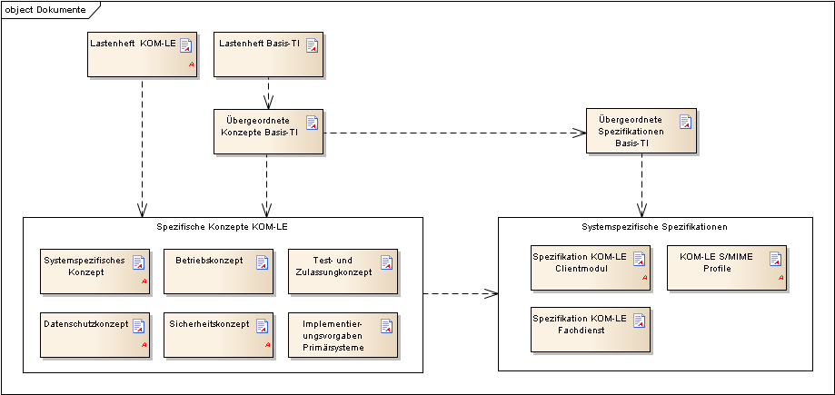

Elektronische Gesundheitskarte und Telematikinfrastruktur
Spezifikation
KOM-LE-Clientmodul
| Version | 1.15.0 |
| Revision | 571451 |
| Stand | 13.01.2023 |
| Status | freigegeben |
| Klassifizierung | öffentlich |
| Referenzierung | gemSpec_CM_KOMLE |
| Seit März 2020 verwendet die gematik die Bezeichnung „KIM – Kommunikation im Medizinwesen“ für die Anwendung KOM-LE. Diese neue Benennung findet sich insbesondere in Informationsmaterialien für die Zielgruppe Leistungserbringer sowie in Presseveröffentlichungen. Eine Umbenennung in den technisch-normativen Dokumenten wie Spezifikationen, Konzepten, Zulassungsdokumenten etc. mit Ausnahme von Angaben zu Domänen, E-Mail-Adressen, technischen Schnittstellen, Parametern u.ä. ist mit Stand Release 4.0.0 nicht geplant. |
Änderungen zur Vorversion
Anpassungen des vorliegenden Dokumentes im Vergleich zur Vorversion können Sie der nachfolgenden Tabelle entnehmen.
Dokumentenhistorie
| Version |
Stand |
Kap./ Seite |
Grund der Änderung, besondere Hinweise |
Bearbeitung |
|---|---|---|---|---|
| 0.5.0 | 19.11.13 | zur Abstimmung freigegeben | gematik | |
| 1.0.0 | 27.01.14 | Einarbeitung Kommentare | gematik | |
| 1.1.0 | 28.02.14 | 4.1.2 | XP-Verweis entfernt | gematik |
| 1.2.0 | 25.07.14 | 3.1 4.1.2/4.1.4 |
Zeitsynchronisation Konnektor ergänzt Formulierungsanpassungen | gematik |
| 1.3.0 | 24.07.15 | Begriff Betreiber durch Anbieter ersetzt | gematik | |
| 1.4.0 | 16.10.16 | Anpassungen gemäß Änderungsliste | gematik | |
| 1.5.0 | 14.05.18 | Einarbeitung P15.4 | gematik | |
| 1.6.0 | 15.05.2019 | Einarbeitung P18.1 | gematik | |
| 1.7.0 | 02.03.20 | Einarbeitung P21.1 | gematik | |
| 1.8.0 | 30.06.20 | Anpassungen gemäß Änderungsliste P22.1 und Scope-Themen aus Systemdesign R4.0.0 | gematik | |
| 1.9.0 | 12.11.20 | Anpassungen gemäß Änderungsliste P22.2 und Scope-Themen aus Systemdesign R4.0.1 | gematik | |
| 1.9.1 | 18.12.20 | Anpassungen gemäß Änderungsliste P22.4 | gematik | |
| 1.10.0 | 19.02.21 | Anpassungen gemäß Änderungsliste P22.5 | gematik | |
| 1.11.0 | 06.04.21 | Anpassungen gemäß Änderungsliste KIM_Maintenance_21.1/ KIM 1.5.1 |
gematik | |
| 1.11.1 | 20.04.21 | Anpassung C_10247 aus KIM_Maintenance_21.1 vervollständigt (A_21247 entfernt) | gematik | |
| 1.12.0 | 04.08.21 | Einarbeitung gemäß KIM Maintenance 21.2 /KIM 1.5.1-3 | gematik | |
| 1.13.0 | 31.01.22 | Einarbeitung gemäß KIM Maintenance 21.3 /KIM 1.5.2 | gematik | |
| 1.14.0 | 20.09.22 | 3.2.1 und 3.4.4.2.2 |
Anpassungen gemäß Änderungsliste KIM_Maintenance_22.2 - KIM 1.5.2-1 und R3.1.3-12 (C_11209) Ergänzung der Beispiele in Kapitel 3.2.1 und 3.4.4.2.2 |
gematik |
| 1.15.0 | 13.01.23 | Anpassungen gemäß Änderungsliste KIM_Maintenance_22.3 - KIM 1.5.2-2 | gematik |
Das vorliegende Dokument spezifiziert die Anforderungen an den Produkttyp KOM-LE-Clientmodul. Das Clientmodul ist verantwortlich für das Signieren und Verschlüsseln von KOM-LE-Nachrichten beim Versenden sowie für die Entschlüsselung und Signaturprüfung beim Abholen von KOM-LE-Nachrichten.
Aus den Kommunikationsbeziehungen mit Clientsystem, Konnektor, Verzeichnisdienst und KOM-LE-Fachdienst resultieren vom Clientmodul anzubietende Schnittstellen, die in diesem Dokument normativ beschrieben werden. Vom Clientmodul genutzte Schnittstellen liegen zumeist in anderen Verantwortungsbereichen (Konnektor, Verzeichnisdienst). Diese werden in den entsprechenden Produkttypspezifikationen definiert.
Dieses Dokument richtet sich an
Dieses Dokument enthält normative Festlegungen zur Telematikinfrastruktur des deutschen Gesundheitswesens. Der Gültigkeitszeitraum der vorliegenden Version und deren Anwendung in Zulassungsverfahren werden durch die gematik GmbH in gesonderten Dokumenten (z.B. Dokumentenlandkarte, Produkttypsteckbrief, Leistungsbeschreibung) festgelegt und bekannt gegeben.
Grundlagen für die Ausführungen dieses Dokumentes sind
Spezifiziert werden in dem Dokument die vom Produkttyp bereitgestellten (angebotenen) Schnittstellen. Benutzte Schnittstellen werden hingegen in der Spezifikation desjenigen Produkttypen beschrieben, der diese Schnittstelle bereitstellt. Auf die entsprechenden Dokumente wird referenziert.
Die Systemlösung der Fachanwendung KOM-LE ist im systemspezifischen Konzept [gemSysL_KOMLE] beschrieben. Dieses Konzept setzt die fachlichen Anforderungen des Lastenheftes auf Systemebene um, zerlegt die Fachanwendung KOM-LE in die zugehörigen Produkttypen, darunter das KOM-LE-Clientmodul und der KOM-LE-Fachdienst. Ferner definiert es die Schnittstellen zwischen den einzelnen Produkttypen. Für das Verständnis dieser Spezifikation wird die Kenntnis von [gemSysL_KOMLE] vorausgesetzt.
Die Anforderungen am Fachdienst werden separat in der Spezifikationen Fachdienst KOM-LE [gemSpec_FD_KOMLE] beschrieben.
Die Anforderungen an das Format der KOM-LE-Nachrichten, die zwischen dem Clientmodul und dem Fachdienst übermittelt werden, werden separat im KOM-LE-S/MIME-Profil [gemSMIME_KOMLE] beschrieben.
Abbildung 1 zeigt schematisch die Einbettung des vorliegenden Dokuments in die Dokumentenlandschaft der Lastenheft- und Pflichtenheftphase in Form einer Dokumentenhierarchie.

Abbildung 1: Abb_Dok_Hierarchie Dokumentenhierarchie KOM-LE
Anforderungen als Ausdruck normativer Festlegungen werden durch eine eindeutige ID sowie die dem RFC 2119 [RFC2119] entsprechenden, in Großbuchstaben geschriebenen deutschen Schlüsselworte MUSS, DARF NICHT, SOLL, SOLL NICHT, KANN gekennzeichnet.
Sie werden im Dokument wie folgt dargestellt:
<AFO-ID> - <Titel der Afo>
Text / Beschreibung
[<=]
Dabei umfasst die Anforderung sämtliche innerhalb der Afo-ID und der Textmarke angeführten Inhalte.
Die Darstellung der Spezifikationen von Komponenten erfolgt auf der Grundlage einer durchgängigen Use-Case-Modellierung als
Sofern im Text dieser Spezifikation auf die Ausgangsanforderungen verwiesen wird, erfolgt dies in eckigen Klammern, z.B. [KOMLE-A_2015]. Wird auf Eingangsanforderungen verwiesen, erfolgt dies in runden Klammern, z.B. (KOMLE-A_202).
Das Clientmodul bietet die Funktionalität, die für Anwendungsfälle KOM-LE_AF_1 „Nachricht senden“ und KOM-LE_AF_2 „Nachricht empfangen“ (siehe [gemSysL_KOMLE]) relevant ist. Die Aufgabe des Clientmoduls ist das Aufbringen und Aufheben des Schutzes der Integrität und Vertraulichkeit der zwischen den KOM-LE-Teilnehmern ausgetauschten E-Mail-Nachrichten. Dabei kommuniziert das Clientmodul mit dem Clientsystem, dem KOM-LE-Fachdienst und nutzt mehrere Dienste der TI-Plattform. Optional kann das Clientmodul in das Clientsystem integriert werden. Abbildung 2 stellt die grundlegenden Elemente der KOM-LE-Architektur dar.
Abbildung 2: Abb_KOMLE_Komp KOM-LE-Komponenten
Die im Clientmodul zu bearbeitenden originalen MIME-Nachrichten von einem Clientsystem, die kleiner oder gleich 15 MiB sind, werden beim Senden entsprechend dem KOM-LE-S/MIME-Profil gemäß [gemSMIME_KOMLE] digital signiert und verschlüsselt und im empfangenden Clientmodul entschlüsselt und deren Signatur geprüft. Die originalen MIME-Nachrichten, die von einem Clientsystem an das Clientmodul übergeben werden, werden im KIM-Kontext als Client-Mails bezeichnet. Bei Client-Mails größer 15 MiB wird die gesamte Client-Mail auf einem separaten Speicherort (Fachdienst) verschlüsselt abgelegt (E-Mail-Daten). Das KOM-LE-S/MIME-Profil konkretisiert die S/MIME-Spezifikation und stellt sicher, dass die Interoperabilität zwischen den verschiedenen KOM-LE-Komponenten sowie der Schutz von Integrität und Vertraulichkeit für alle personenbezogenen medizinischen Daten gewährleistet werden.
Jede dem KOM-LE-S/MIME-Profil entsprechende Nachricht hat die in Abbildung 3 dargestellte Struktur. Die äußere Nachricht ist eine entsprechend dem S/MIME-Standard signierte und verschlüsselte E-Mail-Nachricht. Die innere Nachricht ist die vom Clientmodul verarbeitete Client-Mail (signiert und verschlüsselt) die gemäß message/rfc822 als Anhang in die äußere Nachricht angehangen wird. Die so erzeugte Mail wird im KIM-Kontext als KOM-LE-Nachricht bezeichnet.

Abbildung 3: Abb_Struk_KOMLE_Msg Struktur einer KOM-LE-Nachricht
Die durch das Clientmodul versendeten Nachrichten können vom Client optional gekennzeichnet werden. Es wird empfohlen eine Dienstkennung zu setzen. Andernfalls werden Nachrichten mit einer standardisierten Dienstkennung versehen. Das hierfür notwendiges Attribut im Header der Mail (X-KIM-Dienstkennung) wird im Kapitel 3.6 beschrieben. Erfolgte durch den Client keine Belegung dieses Attributes, wird durch das Clientmodul eine Default-Kennung gesetzt. Um die Abholung der auf dem Mail-Server ankommenden Nachrichten inhaltsabhängig durchführen zu können, wird das Header-Feld "X-KIM-Dienstkennung" aus der inneren Nachricht, die signiert und verschlüsselt ist, in den äußeren Header der Nachricht übernommen.
Zusätzlich wird das Clientmodul um das Administrationsmodul erweitert (siehe auch Kap. 3.7). Mit Hilfe des Administrationsmoduls kann sich der KOM-LE-Teilnehmer beim Fachdienst registrieren oder eine Deregistrierung vornehmen. Zugleich kann über das Administrationsmodul das benötigte Clientzertifikat (PKCS#12 - Datei) heruntergeladen werden.
Abbildung 4: Administrationsmodul für die Kommunikation mit dem Account Manager
Der Funktionsumfang des Clientmodules kann optional in das Clientsystem integriert werden. Somit ist kein separates Clientmodul mehr notwendig.
Wenn das Clientmodul in das Clientsystem (PVS) integriert wird, richten sich die Anforderungen des Clientmodul an das Clientsystem (PVS). Durch die optionale Integration entfallen alle Anforderungen an die Schnittstelle zwischen Clientsystem und Clientmodul, da diese nicht mehr existiert.
In diesem Szenario gilt für Anforderungen, die nur Anteile auf die Schnittstelle zwischen Clientsystem und dem Clientmodul enthalten (z.B. "vom Clientsystem erhaltene E-Mail-Nachrichten"), dass diese Anteile entfallen und die restliche Anforderung umgesetzt werden muss. Abzüglich der Tests der weggefallenen Schnittstelle ändert sich also das Zulassungsverfahren nicht.
KOM-LE-A_2003
Das KOM-LE-Clientmodul MUSS das Senden und Empfangen von Nachrichten mit marktüblichen SMTP/POP3 Desktop-E-Mail-Clients unterstützen.
<=KOM-LE-A_2004-01
Das KOM-LE-Clientmodul MUSS eine decodierte MIME-Message (Client-Mail) mit einer Größe von bis zu 15 MiB verarbeiten können.
<=
Hinweis:
A_19513
Das KOM-LE-Clientmodul MUSS die Zertifikate aus der PKCS#12-Datei entpacken und zur Verfügung stellen. <=
Die PKCS#12-Datei wird für die Registrierung eines KOM-LE-Teilnehmers sowie bei Ablauf des Clientzertifikates benötigt.
KOM-LE-A_2005
Das KOM-LE-Clientmodul DARF NICHT die Inhalte von Nachrichten länger als es für die Aufbereitung und Übermittlung nötig ist, speichern.
<=KOM-LE-A_2230
Das KOM-LE-Clientmodul MUSS sich unter Verwendung der Operation sync_Time mit der Systemzeit des Konnektors synchronisieren.
<=KOM-LE-A_2006
Das KOM-LE-Clientmodul MUSS sich beim Senden und Empfangen von Nachrichten konform zu folgenden Standards verhalten:
Diese Spezifikation erläutert nicht alle Schritte und Einzelheiten der SMTP- und POP3-Kommunikation zwischen dem Clientsystem, dem KOM-LE-Clientmodul und dem KOM-LE-Fachdienst. Es setzt voraus, dass das Format einer E-Mail, MIME, SMTP und POP3 dem Leser bekannt sind.
A_20189-02
Der Anbieter des KOM-LE-Fachdienstes MUSS seinem KOM-LE Teilnehmer bei der Erstellung des Accounts sowie bei einem relevanten Update des Fachdienstes, die nötige KOM-LE-Version des Clientmoduls mitteilen.
<=
Die KOM-LE-Version des Clientmodules muss mitgeteilt werden, damit der Nutzer weiß, welche Clientmodul-Version zu verwenden ist. Bei Nutzung eines Clientmodules in der KOM-LE-Version 1.0 ist eine Registrierung durch den Teilnehmer über die KOM-LE-1.5-Schnittstelle am KOM-LE-Fachdienst nicht möglich.
Die Übermittlung der KOM-LE-Version vom Anbieter kann hierbei in geeigneter Form erfolgen. Die jeweilige Client-Version kann aus dem LDAP-Directory Attribut: komLeData vom VZD entnommen werden. Geltende KOM-LE-Versionen sind 1.0 und 1.5 und werden in der Form in das Header-Element X-KOM-LE-Version eingetragen.
A_20650-05
Das KOM-LE-Clientmodul MUSS bei der Übertragung von Fehlernachrichten ein Mail-Header-Attribut X-KIM-Fehlermeldung mit dem Wert aus der Tabelle "Tab_Fehlercodes_KOMLE-Clientmodule" befüllen. Treten weitere Fehler auf, die nicht in der Tabelle "Tab_Fehlercodes_KOMLE-Clientmodul" definierte sind, MUSS das Clientmodul für diese Fehler das Mail-Header-Attribut X-KIM-Fehlermeldung mit einem herstellerspezifischen Fehlercode befüllen, welcher mit "X" beginnt.
<=
Tabelle #: Tab_Fehlercodes_KOMLE-Clientmodule
| Fehler | Wert |
|---|---|
| Fehlermeldungen beim Senden einer KOM-LE-Nachricht |
|
| Empfänger entfernt, wegen falscher KIM-Version | 4001 |
| Verschlüsselte E-Mail-Daten konnten nicht zum KOM-LE-Attachment-Service übertragen werden | 4002 |
| keine eindeutige Telematik-ID mit Verschlüsselungszertifikat gefunden | 4003 |
| Nachricht nicht für alle Empfänger verschlüsselbar | 4004 |
| Für einen Empfänger existieren mehrere Verschlüsselungszertifikate mit unterschiedlichen Telematik-IDs | 4005 |
| Fehlermeldungen beim Empfangen einer KOM-LE-Nachricht |
|
| Verschlüsselte E-Mail-Daten konnten nicht vom KOM-LE-Attachment-Service geladen werden | 4006 |
| Beim Entschlüsseln der E-Mail-Daten ist ein Fehler aufgetreten | 4007 |
| Das verwendete Clientmodul unterstützt die in der Mail verwendete Version nicht | 4008 |
| Die Nachricht konnte auf Grund eines nicht verfügbaren Schlüssels nicht entschlüsselt werden | 4009 |
| Die Nachricht konnte aufgrund des falschen Formats nicht entschlüsselt werden | 4010 |
| Der Konnektor steht für die Entschlüsselung nicht zur Verfügung | 4011 |
| Die Prüfsumme der E-Mail-Daten stimmt nicht mit der beigefügten Prüfsumme überein. Die empfangene aufbereitete Client-Mail entspricht eventuell nicht der vom Sender auf dem KAS hinterlegten aufbereiteten Client-Mail. | 4012 |
| Verschlüsselte E-Mail-Daten konnten nicht heruntergeladen werden, da durch zu häufigen Zugriff der KOM-LE-Attachment-Service den Abruf verweigert. | 4013 |
| Die Prüfung der Nachricht hat ergeben, dass die Nachricht nach dem Verschlüsseln manipuliert wurde. Möglicherweise wurde die verschlüsselte Nachricht auch an einen nicht empfangsberechtigten Personenkreis versendet. | 4014 |
| Die Prüfung der Signatur der Nachricht hat ergeben, dass die Nachricht manipuliert wurde, um einem anderen Nutzer das Entschlüsseln der Nachricht mit einem Schlüssel, der nicht in seinem Besitz ist, zu ermöglichen. | 4015 |
| Sonstige Fehlermeldungen |
|
| Bei der Aktualisierung der PKCS#12-Datei ist ein Fehler aufgetreten | 4016 |
| Die KIM-Version des Clientmoduls ist kleiner als die im Verzeichnisdienst zu seinem Eintrag hinterlegte Version | 4017 |
Die Fehlermeldungen beim Senden einer KIM-Mail werden über den Fachdienst zurück an den Sender übermittelt, da eine direkte Rückgabe der Fehlernachricht zum Client nicht vorgesehen ist. Das Clientmodul befüllt im Fehlerfall das X-KIM-Fehlermeldung-Attribut und sendet dies anschließend über den Fachdienst an den Sender zurück. Die Fehlermeldungen beim Empfang einer KIM-Mail werden auf direkten Weg dem Empfänger zugestellt. Der Client (z. B. PVS) muss die Fehlercodes aus der Tabelle Tab_Fehlercodes_KOMLE-Clientmodule auswerten.
Hinweis: Sollten mehrere negative Ergebnisse auftreten, KANN das Mail-Header-Attribut X-KIM-Fehlermeldung mehrmals verwendet werden.
Beispiel:
X-KIM-Fehlermeldung: 4001
X-KIM-Fehlermeldung: 4004
X-KIM-Fehlermeldung: X99
Die folgende Anforderung bezweckt, dass bei Einsatz mehrerer Clientmodule in unterschiedlichen Versionen, der KIM-Teilnehmer bei Verwendung eines Clientmoduls in einer kleineren Version darüber informiert wird, dieses zu updaten.
A_21387-01
Das KOM-LE-Clientmodul MUSS vor dem Versenden einer Nachricht die KOM-LE-Version des Absenders mittels des LDAP-Directory Attributs: komLeData aus dem Verzeichnisdienst [gemSpec_VZD#5] abfragen. Ist die KOM-LE-Version des Clientmoduls kleiner als die im Verzeichnisdienst eingetragene, so MUSS das Clientmodul den Absender mit einer E-Mail darüber informieren. Aus dem Inhalt der E-Mail MUSS hervorgehen, dass die verwendete Clientmodul Version veraltet ist. Die E-Mail ist weder zu signieren noch zu verschlüsseln und entspricht der Delivery Status Notification gemäß [RFC3461-3464]. Ist die KOM-LE-Version des Clientmoduls größer als die im Verzeichnisdienst abgefragte Version MUSS das Clientmodul das LDAP-Directory Attribut: komLeData für den Absender mit der neuen Versionen überschreiben.
<=
A_22416
Das KOM-LE Clientmodul MUSS beim Versenden einer E-Mail die Operation getLimits am Account Manager aufrufen, um alle technischen Konfigurationsdaten eines Nutzers (dataTimeToLive, maxMailSize, quota, remainQuota) zu erhalten. Das Clientmodul KANN für jeden Nutzer-Account die abgerufenen Daten 24 Stunden zwischenspeichern (cachen).
<=
A_22417
Das Clientmodul MUSS beim Versand-Vorgang der verschlüsselten Mail einen Header "Expires" in den Header der äußeren Nachricht aufnehmen. Der Wert ermittelt sich aus Versandzeitpunkt (TI-Zeit) + TTL (dataTimeToLive) als offset.
<=
A_21388-01
Das Clientmodul MUSS im Header Element X-KIM-CMVersion der äußeren Nachricht die VendorID, sowie die Produktversion des verwendeten Clientmoduls gemäß des Formates:
"[a-zA-Z0-9_]{1,5}_[0-9]{1,2}\.[0-9]{1,2}\.[0-9]{1,2}(-25[0-5]|-2[0-4][0-9]|-[0-1]?[0-9]?[0-9]){0,1}" eintragen.
Zusätzlich MUSS das Clientmodul im Header Element X-KIM-PTVersion der äußeren Nachricht die Produkttypversion des Clientmoduls gemäß des Formates:
"[0-9]{1,2}\.[0-9]{1,2}\.[0-9]{1,2}(-25[0-5]|-2[0-4][0-9]|-[0-1]?[0-9]?[0-9]){0,1}"eintragen.
Zusätzlich MUSS das Clientmodul im Header-Element X-KIM-KONVersion der äußeren Nachricht die Version des verwendeten Konnektors gemäß seiner Produktversion im Format "<Productname><ProductType><ProductTypeVersion><HWVersion><FWVersion> eintragen.
<=
Beispiel:
X-KIM-CMVersion: [VendorID]_2.1.2-8
X-KIM-PTVersion: 1.5.0-2
X-KIM-KONVersion: <secunet konnektor 2.0.0><Konnektor PTV4Plus><4.80.3><2.0.0><4.10.1>
Die Produkttypversion entspricht dabei der Produkttypversion aus dem Produkttypsteckbrief. Die Clientmodulversion entspricht dabei der zugelassenen Produktversion, die im TI-ITSM-System hinterlegt und gepflegt wird.
A_21389
Der KIM-Anbieter MUSS der gematik auf Anfrage eine nicht-personenbezogene Gesamtübersicht, der sich im Feld befindenden aktiven KIM-Clientmodule, zur Verfügung stellen. <=
Dieses Kapitel beschreibt die Verarbeitung von Client-Mails, welche die Größe von 15 MiB überschreiten. Die Größenbeschränkung auf 15 MiB basiert auf Limitierungen der Konnektoroperationen zum Signieren und Verschlüsseln.
Client-Mails mit einer Gesamtgröße bis zu 15 MiB werden entsprechend den Festlegungen in KOM-LE 1.0 behandelt. Übersteigt die Größe einer Client-Mail die 15-MiB-Grenze, wird die gesamte Client-Mail (E-Mail-Daten) durch das KOM-LE-Clientmodul auf einem Speicher des KOM-LE-Fachdienstes (KAS) abgelegt. Das KOM-LE-Clientmodul ersetzt die KOM-LE-Nachricht mit den Metadaten der auf dem KAS abgelegten E-Mail-Daten und versendet sie als signierte und verschlüsselte KOM-LE-Nachricht. Das KOM-LE-Clientmodul des Empfängers erkennt anhand der im Mail Header übergebenen X-KOM-LE-Version, dass es sich um eine KOM-LE 1.5 Nachricht handelt. Es nutzt die im Mail Body enthaltene Information, um die verschlüsselten E-Mail-Daten vom KOM-LE-Fachdienst (KAS) abzurufen, zu entschlüsseln und zu einer Client-Mail zusammenzufügen.
In Kapitel "Schnittstelle I_Attachment_Services" gemäß [gemSpec_FD_KOMLE] wird der Umgang mit großen Client-Mails in einem Sequenzdiagramm erläutert.
In diesem Kapitel werden Anforderungen an das Clientmodul formuliert, die es erlauben, Client-Mails von über 15 MiB zu versenden.
A_19355-01
Das KOM-LE-Clientmodul MUSS die Größe der vom KOM-LE-Client erhaltenen Nachricht (gegen den Wert maxMailSize aus der Operation I_AccountLimit_Service::getLimits) prüfen. Im Fehlerfall wird dem KOM-LE-Client der Fehlercode X.3.4 [RFC3463] zurückgegeben.
<=
A_19356-05
Das KOM-LE-Clientmodul MUSS die vom Empfänger verwendete KOM-LE-Version prüfen. Das KOM-LE-Clientmodul MUSS dazu die KOM-LE-Version mittels des LDAP-Directory Attributs: komLeData aus dem Verzeichnisdienst [gemSpec_VZD#5] abfragen. Ist das LDAP-Directory Attribut: komLeData für den Empfänger undefiniert, dann muss ein KOM-LE-Clientmodul mit einer Version 1.0 angenommen werden.
Wenn eine Client-Mail größer als 15 MiB an einen Empfänger mit KOM-LE-Version < 1.5 versendet werden soll, MUSS das KOM-LE-Clientmodul diesen Empfänger aus der Mail entfernen. Beim Entfernen eines Empfängers MUSS das KOM-LE-Clientmodul den Absender mit einer E-Mail über den Fehlerfall informieren. Aus dem Inhalt der Fehlernachricht müssen alle aus der Mail entfernten Empfänger hervorgehen. Die Fehlernachricht ist weder zu signieren noch zu verschlüsseln und entspricht der Delivery Status Notification gemäß [RFC3461-3464]. Kann die Mail für keinen der Empfänger versendet werden, wird das Senden der Nachricht abgebrochen. Dabei wird dem MTA das RSET-Kommando gesendet und das Clientsystem wird mit dem SMTP-Antwortcode "451" über den Fehlerfall informiert.
<=
A_22340
Das Clientmodul MUSS das Cachen von KOM-LE-Versionen der Mail-Empfänger nach der Abfrage am VZD für eine maximale Zeitdauer von 24 Stunden unterstützen.
<=
A_19357-02
Das KOM-LE-Clientmodul MUSS gewährleisten, dass die von einem Clientsystem übergebene Client-Mail vor der Übergabe an den Konnektor 15 MiB nicht überschreitet. Übersteigt die Größe einer Client-Mail die 15 MiB-Grenze MUSS das Clientmodul die gesamte Client-Mail verschlüsselt auf einem Speicher des KOM-LE-Fachdienstes (KAS) abgelegen und die Metadaten der auf dem KAS abgelegten Client-Mail in die zu versendende KOM-LE-Mail einbetten.
<=
A_19358-01
Das KOM-LE-Clientmodul MUSS für die Verschlüsselung der auf dem KAS abzulegenden E-Mail-Daten einen symmetrischen Schlüssel generieren. Hierbei MUSS das KOM-LE-Clientmodul die Kriterien gemäß [gemSpec_Krypt] einhalten.
<=
Hinweis: Der Initialisierungsvektor muss vom Sender pro Nachricht zufällig erzeugt werden. Dieser wird nach Konvention dem Chiffrat (=> ersten 12 Byte) vorangestellt: [IV + Chiffrat].
A_19364-02
Das KOM-LE-Clientmodul MUSS das Ergebnis der Operation add_Attachment [gemSpec_FD_KOMLE] prüfen. Bei einem HTTP-Status 201 MUSS das KOM-LE-Clientmodul den zurückgelieferten Freigabelink in die KIM-Attachment-Datenstruktur im Mail-Body der zu versendenden KOM-LE-Nachricht aufnehmen.
<=
Mit der folgenden Anforderung wird sichergestellt, dass ein Client nicht bereits unerwünschten Kontent (über die Attachment Datenstruktur) in die an das Clientmodul übergebene KIM-Mail eingefügt hat.
A_22341
Das KOM-LE-Clientmodul MUSS die vom KOM-LE-Client erhaltene Nachricht auf Vorhandensein von MIME konformen Content-Headern mit Content-Type: text/plain; charset=utf-8 sowie ein Content-Disposition: x-kas prüfen. Ist mindestens ein derartiger Content-Header in der Nachricht enthalten, wird dem KOM-LE-Client der SMTP-Antwortcode 451 zurückgegeben.
<=
A_19359-07
Das KOM-LE-Clientmodul MUSS für die auf dem KAS abgelegten E-Mail-Daten folgende KIM-Attachment-Datenstruktur gemäß [Attachment_Schema] im Mail-Bod befüllen und als einziges Body-Element in den Mail-Body der vorverarbeiteten originalen Client-Mail durch den MIME-Part Content-Disposition: x-kas ersetzen.
Tabelle 1 KIM-Attachment-Datenstruktur
| Attribut in KIM-Attachment-Datenstruktur | Wert |
|---|---|
| link | Freigabelink der verschlüsselten E-Mail-Daten gemäß [A_19364] |
| k | AES-GCM Key der E-Mail-Daten (symmetrischer Schlüssel) im Base64 Format |
| hash | Hashwert der E-Mail-Daten (entsprechend A_19644 [gemSpec_Krypt] zu bilden) im Base64 Format |
| size | Größe der E-Mail-Daten in Byte |
Hinweis: Bei den E-Mail-Daten handelt es sich um die verschlüsselte Client-Mail die auf dem KAS abgelegt wurde und über den Freigabelink eindeutig zuordenbar ist. In der zu erzeugenden KOM-LE-Nachricht wird der Mail-Header der Client-Mail übernommen und der Mail-Body mit der KIM-Attachment-Datenstruktur ersetzt. Das folgende Beispiel soll die Verarbeitung verdeutlichen:
Beispiel für eine Client-Mail mit zwei Anhängen die 15 MiB überschreitet:
From: "Sender" <sender@maildomain.de>
To: <empfaenger@maildomain.de>
Message-Id: <II8HEDLEUEU4.EG0B98QUZNPM2@STST-TEST>
Subject: Mail mit zwei Anhängen
Mime-Version: 1.0
X-KIM-Dienstkennung: KIM-Mail;Default;V1.0
X-KIM-CMVersion: [VendorID]_2.1.2-8
X-KIM-PTVersion: 1.5.0-2
X-KIM-KONVersion: <secunet konnektor 2.0.0><Konnektor PTV4Plus><4.80.3><2.0.0><4.10.1>
X-KIM-Sendersystem: Beispiel-PVS;V2.81
Content-Type: multipart/mixed; boundary="body_part_boundary"
--body_part_boundary
Content-Type: text/plain; charset=utf-8
Content-Transfer-Encoding: quoted-printable
Content-Disposition: inline
Ein Dokument und eine Aufnahme im Anhang.
--body_part_boundary
Content-Type: application/msword; name="MR-2020-04-01-xyz.doc"
Content-Transfer-Encoding: base64
Content-Disposition: attachment; filename="MR-2020-04-01-xyz.doc"
ABCDABCDABCDABCDABCDABCDABCDABCDABCDABCDABCDABCDABCDABCDABCDABCDABCDABCDABCD
[Anhang gekürzt]
ABCDABCDABCDABCDABCDABCDABCDABCDABCDABCDABCDABCDABCDABCDABCDABCDABCDABCDABCD
ABCDABCDABCDABCDABCDABCDABCD==
--body_part_boundary
Content-Type: image/jpeg; name="Roentgenbild-375632378.jpg"
Content-Transfer-Encoding: base64
Content-Disposition: attachment; filename="Roentgenbild-375632378.jpg"
/9j/4AAQSkZJRgABAQEASSBIAAD/2wBDAAEBAQEBAQEBAQEBAQEBAQEDAQEBAQEBAQEBAEEBAQEB
[Anhang gekürzt]
RAQFRBcwRD8H6y8B+voDMoSa1I4Md6+UMzwKVdT3W/fz4cotgwwoZDa1sbvrwU1QcEyNlI3KwKwZ
uiFj1Ka6BVAM2WU4rCh+xfXS1/p573//2Q==
--body_part_boundary--
Die zu erzeugende KOM-LE-Nachricht mit der KIM-Atachment-Datenstruktur vor der Verarbeitung durch den Konnektor:
From: "Sender" <sender@maildomain.de>
To: <empfaenger@maildomain.de>
Message-Id: <II8HEDLEUEU4.EG0B98QUZNPM2@STST-TEST>
Subject: Mail mit zwei Anhängen
Mime-Version: 1.0
X-KIM-Dienstkennung: KIM-Mail;Default;V1.0
X-KIM-CMVersion: [VendorID]_2.1.2-8
X-KIM-PTVersion: 1.5.0-2
X-KIM-KONVersion: <secunet konnektor 2.0.0><Konnektor PTV4Plus><4.80.3><2.0.0><4.10.1>
X-KIM-Sendersystem: Beispiel-PVS;V2.81
Content-Type: text/plain; charset=utf-8
Content-Disposition: x-kas
{
"link": "HTTPS://KIM-FD1.telematik.de/CXFDTE82346dfzwr7634dfs76sd76sdtzq376e3tzsd",
"k": "RzVEY3M0MzkmNGZkc2RneCVoX2tkdFQlNXczZnZDdDM2ZGZ2eGZzJDYxITJndmR1VWpzKGk=",
"hash": "Z6A65Z2dasI2I00mM7uxtQjLsEwwl+WLMnDw8eLntaA=",
"size": 25525700
}
A_19360-02
Das KOM-LE-Clientmodul MUSS die E-Mail-Daten, welche auf dem KAS abgelegt werden, mit dem erzeugten symmetrischen Schlüssel gemäß GS-A_5016 [gemSpec_Krypt] verschlüsseln.
<=
A_19361-01
Das KOM-LE-Clientmodul MUSS mittels DNS Service Discovery den FQDN vom KIM Fachdienst und dessen zugehörigen KAS des Senders ermitteln.
<=
Die für die Lokalisierung benötigten DNS Service-Records werden in der [gemSpec_FD_KOMLE] im Kapitel 3.4 Service Lokalisierung beschrieben.
A_19362
Das KOM-LE-Clientmodul MUSS eine beidseitige gesicherte TLS-Verbindung zum KAS des Fachdienstes aufbauen.
<=
Der KAS ist ein Bestandteil des Fachdiensts. Deshalb gelten für die TLS-Verbindungen (inklusive genutzter Zertifikate) zum KAS ebenfalls die Festlegungen von Kap. 4.1.4.
A_19363-03
Das KOM-LE-Clientmodul MUSS für die Übertragung von E-Mail-Daten, die vom KAS des Fachdienstes bereitgestellte Operation add_Attachment aufrufen.
Im Fehlerfall MUSS das Clientmodul das Clientsystem mit dem SMTP-Antwortcode "451“ (gemäß [RFC3463]) benachrichtigen und den Versandt zum MTA mit dem RSET-Kommando abbrechen, da die Nachricht nicht übertragen werden konnte. Verarbeitungsschritte des Clientmoduls, welche die originale Nachricht betreffen (z. B. Anpassung Headerinformationen) MÜSSEN vor der Übertragung der originalen E-Mail-Daten zum KAS erfolgen.
<=
A_19365-02
Das KOM-LE-Clientmodul MUSS die KOM-LE-Nachricht, welche das Body-Element der KIM-Attachment-Datenstruktur beinhaltet, entsprechend den Festlegungen für Mails kleiner oder gleich 15 MiB senden. <=
A_22419-01
Wenn das Clientmodul bei der Übertragung von E-Mail-Daten einen Fehlercode 507 vom KAS erhält, MUSS es den Mailversand abbrechen und dem KOM-LE-Client den SMTP-Fehlercode 521 gemäß [RFC3463] zurückgeben und den Versandt zum MTA mit dem RSET-Kommando abbrechen.
<=
A_22427-01
Das KOM-LE-Clientmodul MUSS bei der Übertragung der E-Mail-Daten das HTTP-Header-Element "Content-Length" immer mit der Gesamt-Länge des Request-Bodys befüllen.
<=
In diesem Kapitel werden Anforderungen an das Clientmodul formuliert, die es erlauben, große Client-Mails zu empfangen.
A_19367
Das KOM-LE-Clientmodul MUSS die E-Mail-Nachricht empfangen.
<=
A_19368
Das KOM-LE-Clientmodul MUSS eine beidseitige gesicherte TLS-Verbindung zum KAS des Fachdienstes aufbauen.
<=
Die Anforderungen an die TLS Authentifizierung und die Zertifikate entsprechen den Anforderungen von dem Fachdienst.
A_19369-02
Das KOM-LE-Clientmodul MUSS den Hash-Wert, den Freigabelink sowie den symmetrischen Schlüssel aus der KIM-Attachment-Datenstruktur, aus dem Body-Element der abgerufenen KOM-LE-Nachricht entnehmen. Das KOM-LE-Clientmodul DARF KOM-LE-Nachrichten NICHT verarbeiten, die mehr als eine KIM-Attachment-Datenstruktur gemäß [A_19359] beinhalten.
Ist mehr als eine KIM-Attachment-Datenstruktur in der abgerufenen KOM-LE-Nachrichten enthalten, MUSS das Clientmodul den Nutzer über den Fehlerfall informieren. Hierfür MUSS das Clientmodul den Mail-Body der entschlüsselten originalen Nachricht durch den folgenden Inhalt "Nachricht konnte aufgrund uneindeutiger Informationen nicht abgerufen werden" als text/plain MIME-Einheit ersetzen.
<=
A_19370-04
Das KOM-LE-Clientmodul MUSS die E-Mail-Daten anhand des entnommenen Freigabelinks via der Operation read_Attachment am KAS des Fachdienstes herunterladen.
Wenn beim Herunterladen der E-Mail-Daten ein Fehler auftritt, dann MUSS das KOM-LE-Clientmodul die empfangene, dem KOM-LE-S/MIME-Profil entsprechende Nachricht, als eine message/rfc822 MIME-Einheit in einer neuen multipart/mixed MIME-Nachricht dem Clientsystem übermitteln. Zusätzlich muss diese neue multipart/mixed MIME-Nachricht eine text/plain MIME-Einheit mit dem Fehlertext [Tab_Fehlertext_Download] enthalten. Die orig-date, from, sender, reply-to, to und cc Header-Elemente der neuen multipart/mixed Nachricht werden aus der empfangenen Nachricht übernommen. Das subject Header-Element der neuen multipart/mixed Nachricht erhält den Wert „Die E-Mail-Daten konnten nicht abgerufen werden“.
<=
Bei einer solchen Fehlernachricht gibt es folgende Optionen:
Tabelle "Tab_Fehlertext_Download Fehlertext beim Download von E-Mail-Daten" enthält den Fehlertext, der in die Nachricht eingeführt wird, wenn der Download von E-Mail-Daten nicht durchgeführt werden konnte.
Tabelle 2 Tab_Fehlertext_Download Fehlertext beim Download von E-Mail-Daten
| Bedingung |
Fehlertext |
|---|---|
| E-Mail-Daten konnten nicht heruntergeladen werden. |
Die E-Mail-Daten dieser Nachricht konnten nicht heruntergeladen werden. Bitte leiten Sie diese Nachricht nach einer angemessenen Zeit an Ihre eigene E-Mail-Adresse (<Email Adresse>) weiter. Beim nächsten Abholen wird der Download wiederholt. |
| E-Mail-Daten konnten nicht entschlüsselt werden. | Die E-Mail-Daten dieser Nachricht konnten nicht entschlüsselt werden, bitte kontaktieren Sie den Absender der Nachricht. |
A_22412-01
Das Clientmodul MUSS bei Aufruf der Operation read_Attachment bei der Rückgabe des HTTP-Fehlercodes 429, das Mail-Header-Attribut X-KIM-Fehlermeldung mit dem Wert gemäß Tabelle „Tab_Fehlercodes_KOMLE-Clientmodule“ 4013 in die empfangene KOM-LE-Nachricht befüllen.
Ebenfalls MUSS das KOM-LE-Clientmodul die empfangene, dem KOM-LE-S/MIME-Profil entsprechende Nachricht, als eine message/rfc822 MIME-Einheit in einer neuen multipart/mixed MIME-Nachricht dem Clientsystem übermitteln. Zusätzlich muss diese neue multipart/mixed MIME-Nachricht eine text/plain MIME-Einheit mit dem Fehlertext gemäß der Tabelle "Tab_Fehlercodes_KOMLE-Clientmodule" enthalten. Die orig-date, from, sender, reply-to, to und cc Header-Elemente der neuen multipart/mixed Nachricht werden aus der empfangenen Nachricht übernommen. Das subject Header-Element der neuen multipart/mixed Nachricht erhält den Wert „Die E-Mail-Daten konnten nicht abgerufen werden“.
<=
Bei einer solchen Fehlernachricht gibt es folgende Optionen:
Tabelle "Tab_Fehlercodes_KOMLE-Clientmodule" enthält den Fehlertext, der in die Nachricht eingefügt wird, wenn der Abruf von E-Mail-Daten zu häufig ausgeführt wurde.
A_19371-04
Das KOM-LE-Clientmodul MUSS die heruntergeladenen E-Mail-Daten mit dem symmetrischen Schlüssel entschlüsseln.
Wenn beim Entschlüsseln der E-Mail-Daten ein Fehler auftritt, MUSS das KOM-LE-Clientmodul den Mail-Body der entschlüsselten originalen Nachricht durch den folgenden Inhalt "Abgerufene E-Mail-Daten konnten nicht entschlüsselt werden" als text/plain MIME-Einheit ersetzen. Zusätzlich MUSS das Clientmodul das Mail-Header-Attribut X-KIM-Fehlermeldung mit dem Wert "4007" gemäß Tabelle „Tab_Fehlercodes_KOMLE-Clientmodule“ befüllen.
<=
A_19372-03
Das KOM-LE-Clientmodul MUSS den Hash-Wert der entschlüsselten E-Mail-Daten entsprechend [A_19644] bilden und mit dem Hash-Wert aus der abgerufenene KIM-Attachment-Datenstruktur vergleichen. Bei einer Nichtübereinstimmung MUSS das KOM-LE-Clientmodul den Mail-Body der entschlüsselten originalen Nachricht durch den folgenden Inhalt als text/plain MIME-Einheit ersetzen und an den Empfänger weiterleiten:
"Beim Empfang dieser KIM-Nachricht wurde eine Sicherheitsverletzung erkannt. Dies kann eine technisches Ursache haben oder auf eine missbräuchliche Nutzung des KIM-Dienstes hinweisen. Zu Ihrem Schutz wurde der Inhalt dieser Nachricht durch diesen Text ausgetauscht. Bitte antworten Sie nicht auf diese Nachricht. Sie können diese Nachricht löschen. [+ optionaler Freitext der Anbieter]".
Zusätzlich MUSS das Clientmodul das Mail-Header-Attribut X-KIM-Fehlermeldung mit dem Wert 4012 gemäß Tabelle „Tab_Fehlercodes_KOMLE-Clientmodule“ befüllen.
<=
A_19374-03
Das KOM-LE-Clientmodul MUSS die vom KAS abgerufenen und entschlüsselten E-Mail-Daten, als originale Nachricht (Client-Mail) wiederherstellen und ergänzt um den Vermerk der erfolgreichen Verarbeitung (Entschlüsselung und Integritätsprüfung) an das Clientsystem übermitteln.
<=
Beim Senden von KOM-LE-Nachrichten sorgt das Clientmodul dafür, dass die gesendeten KOM-LE-Nachrichten digital signiert und verschlüsselt dem MailTransfer Agent des KOM-LE-Fachdienstes (weiter im Text als MTA bezeichnet), bei dem der Sender registriert ist, übermittelt werden. Bei Client-Mails größer 15 MiB wird die Client-Mail symmetrisch verschlüsselt und auf dem KAS des Fachdienstes abgespeichert.
Abbildung 5 stellt die Interaktionen zwischen den am Senden von KOM-LE-Nachrichten beteiligten Komponenten dar. Aus der Sicht des Clientsystems agiert das Clientmodul als ein MTA und aus der Sicht des MTAs des Fachdienstes agiert das Clientmodul als MUA. Für Funktionen wie Datentransport, kryptographische Operationen und Kommunikation mit dem Verzeichnisdienst verwendet das Clientmodul entsprechende Dienste der TI-Plattform.
Abbildung 5: Abb_Send_Msg Senden von Nachrichten
Beim Senden von Nachrichten findet die Kommunikation zwischen dem Clientsystem, dem Clientmodul und dem MTA über SMTP statt. Das Clientmodul fungiert als SMTP Proxy, der das Clientsystem mit dem MTA verbindet, die Integrität und Vertraulichkeit der vom Clientsystem gesendeten Nachricht schützt und die Nachricht an den MTA übermittelt.
Sobald die Nachricht komplett dem MTA übertragen wurde und der MTA das Ankommen der Nachricht bestätigt, übergibt das Clientmodul die Verantwortung für die Nachricht an den MTA. Die Übermittlung von Nachrichten zwischen MTAs ist nicht Bestandteil dieser Spezifikation.
Es liegt in der Verantwortung des Clientmoduls sicher zu stellen, dass die Nachricht erfolgreich dem MTA übertragen wird. Falls die Übermittlung einer Nachricht an den MTA fehlschlägt (z.B. bei Verbindungsaufbau mit dem MTA, Authentifizierung gegenüber dem MTA, Verschlüsselung oder Signieren der Nachricht), benachrichtigt das Clientmodul das Clientsystem unter Verwendung entsprechenden SMTP-Antwortcodes über den Fehler.
Beispiel: Verwendet das Clientsystem beim Senden von Nachrichten falsche Anmeldungsdaten, erhält es vom Clientmodul „535 5.7.8 Der Nutzer konnte nicht authentifiziert werden“ als Antwort auf sein AUTH-Kommando.
Das Verhalten des Clientmoduls beim Senden von Nachrichten wird mit Hilfe der in Abbildung 6 dargestellten Zustandsmuster beschrieben. Die im Dokument dargestellten Zustände haben nur illustrativen und keinen normativen Charakter. Die Umsetzung kann sich unterscheiden, solange das Ergebnis das Gleiche ist. Die den Zuständen zugeordnete Anforderungen sind normativ, können aber außerhalb des Kontexts dieser Zustände umgesetzt werden.
Abbildung 6: Abb_State_CM_Send Zustände Clientmodul beim Senden von Nachrichten
Das Clientmodul lauscht auf einem TCP Port und wartet bis ein Clientsystem mit ihm eine Verbindung aufbaut. Sobald dies passiert, geht das Clientmodul in den CONNECT-Zustand über und betrachtet die SMTP-Verbindung als geöffnet. Die Verbindung zwischen dem Clientsystem und dem Clientmodul muss mit TLS geschützt werden.
Im CONNECT-Zustand führt das Clientmodul einen SMTP-Dialog mit dem Clientsystem, in dem ihm die Anmeldedaten des Nutzers sowie die Adresse und die Portnummer des MTAs mitgeteilt werden. Sobald die Anmeldedaten und die Adresse des MTAs übermittelt sind, baut das Clientmodul eine über TLS geschützte SMTP-Verbindung mit dem MTA auf, authentifiziert sich und geht in den PROXY-Zustand über.
Im PROXY-Zustand leitet das Clientmodul SMTP-Kommandos und SMTP-Antwortcodes zwischen dem Clientsystem und dem MTA weiter, bis das Clientsystem mit dem DATA-Kommando die Übertragung einer Nachricht initiiert. Sobald das Clientsystem anfängt, Inhalte einer Nachricht zu übertragen, geht das Clientmodul in den PROCESS-Zustand über.
In PROCESS-Zustand wird die Nachricht entsprechend dem KOM-LE-S/MIME-Profile [gemSMIME_KOMLE] geschützt und anschließend an den MTA übermittelt. Sobald die Nachricht erfolgreich an den MTA übertragen wurde oder im Fehlerfall, geht das Clientmodul in den PROXY-Zustand zurück.
Nachdem die Verbindungen zwischen dem Clientsystem, dem Clientmodul und dem MTA aufgebaut wurden, übermittelt das Clientmodul die SMTP-Meldungen zwischen dem Clientsystem und dem MTA so lange die beiden Verbindungen bestehen.
Sobald die TCP-Verbindung zwischen dem Clientsystem und dem Clientmodul aufgebaut ist, geht das Clientmodul in den CONNECT-Zustand über.
KOM-LE-A_2007
Nachdem die SMTP-Verbindung zwischen dem Clientsystem und dem Clientmodul aufgebaut ist, MUSS das Clientmodul dem Clientsystem die SMTP-Begrüßung senden. Um zu signalisieren, dass Extended SMTP unterstützt wird, muss die Begrüßung „ESMTP“ enthalten.
<=Beispiel einer solchen Begrüßung: 220 KOM-LE-Clientmodul ESMTP
Das Clientmodul führt einen SMTP-Dialog mit dem Clientsystem bis zum Punkt, an dem das Clientsystem ihm die Adresse und die Portnummer des MTAs als einen Teil des während des Authentifizierungsverfahrens übertragenen Benutzernamens mitteilt (siehe Kapitel 3.2.2.2).
Tabelle Tab_SMTP_Ant_Init beschreibt Antworten, die das Clientmodul dem Clientsystem im CONNECT-Zustand sendet.
Tabelle 3: Tab_SMTP_Ant_Init Antworten Clientmodul im CONNECT-Zustand
| SMTP-Kommando (Clientsystem -> Clientmodul) |
SMTP-Antwortcode (Clientmodul -> Clientsystem) |
|---|---|
| HELO |
“250 OK” Antwortcode |
| EHLO |
“250 OK” Antwortcode mit folgenden EHLO Kennworten: SIZE <size> AUTH LOGIN PLAIN 8BITMIME ENCHANCEDSTATUSCODES DSN und <size> gleich oder großer als 35882577 |
| AUTH |
Anmeldungsdaten erhalten und Verbindungsaufbau mit dem MTA beginnen (siehe Kapitel 3.2.2.2) |
| RSET, NOOP |
„250 OK“ Antwortcode |
| MAIL, RCPT, DATA |
„530 5.7.0“ Antwortcode (Authentication required) |
| QUIT |
„221 OK“ Antwortcode senden und die Verbindung mit dem Clientsystem schließen |
| Andere Meldungen |
„502 5.5.1“ Antwortcode (Invalid command) |
KOM-LE-A_2008
Das Clientmodul MUSS, nachdem die SMTP-Verbindung zwischen dem Clientsystem und dem Clientmodul aufgebaut wird und bis zum Punkt an dem das Clientsystem die Bestätigung des Erfolgs oder Misserfolgs seiner Authentifizierung erwartet, einen SMTP-Dialog entsprechend der Tabelle Tab_SMTP_Ant_Init mit dem Clientsystem führen.
<=Das Clientmodul kann die Verbindung mit dem MTA nur dann aufbauen, wenn ihm das Clientsystem die Adresse des MTAs und die Portnummer des SMTP-Dienstes übermittelt. Das Clientmodul erwartet, dass ihm der Domain Name oder die IP-Adresse und die Portnummer während des Authentifizierungsverfahrens als Teil des Benutzernamens mitgeteilt werden.
Das Clientmodul führt das Authentifizierungsverfahren mit dem Clientsystem bis zu dem Punkt, an dem es mit dem entsprechenden Antwortcode die Authentifizierung akzeptieren oder ablehnen muss. Das Clientmodul allein kann das Clientsystem nicht authentifizieren. Die Authentizität der Zugangsdaten kann nur vom MTA überprüft werden. Dazu authentifiziert sich das Clientmodul im Auftrag vom Clientsystem gegenüber dem MTA.
Die MTA-Adresse und die Portnummer des SMTP-Dienstes sind als Teil des SMTP-Benutzernamens vom Clientsystem zu übergeben. Sie sind vom eigentlichen Benutzernamen durch das Zeichen ’#’ getrennt und als adresse:port String formatiert.
Um mit der SM-B über den Konnektor kommunizieren zu können, werden dem KOM-LE-Clientmodul ebenfalls als Teil des SMTP-Benutzernamens, die Parameter
übergeben (siehe Kapitel 3.5 und [gemSpec_Kon] für Details zu MandantId, ClientSystemId und WorkplaceId). Der optionale Parameter KonnektorID, als Bestandteil des Aufrufkontext für SM-B, ermöglicht die Unterstützung von Multikonnektor-Umgebungen. Die Parameter entsprechen denen des aufrufenden Clients und werden voneinander durch das Zeichen ’#’ getrennt.
Der Aufbau des SMTP-Benutzernamens entspricht somit dem folgenden Muster und hat der den Parametern vorangestellten Nummer in der Reihenfolge zu entsprechen:
[0] Benutzername
[1] <Domain Adresse des SMTP-Servers>:<Port>
[2] MandantId
[3] ClientsystemId
[4] WorkplaceId
— <optional> —
[5] KonnektorId
[...]
Abbildung 7: Abb_MTA_Nutzername Format des SMTP- Benutzernamens
Beispiel:
Bei folgenden Informationen
erwartet das Clientmodul, dass das Clientsystem ihm folgenden SMTP-Benutzernamen als String überträgt:
erik.mustermann@hrst_domain.kim.telematik#hrst_domain.kim.telematik:465#1#KOM_LE#7#Konn_1
Das KOM-LE-Clientmodul bricht die Kommunikation mit dem entsprechende SMTP-Antwortcode ab (siehe Tabelle Tab_SMTP_Verbindung), wenn der erhaltene SMTP-Benutzername nicht alle erforderlichen Parameter enthält. Beinhaltet der SMTP-Benutzername zusätzliche optionale durch ‚#’ abgegrenzte Parameter (z. B. #KonnektorId), dann müssen diese Parameter vom Clientmodul ausgewertet werden und der Sendevorgang wird fortgesetzt.
Für SMTP-Authentifizierung existieren sowohl Mechanismen für die Übertragung von Nutzername und Passwort im Klartext (PLAIN und LOGIN) als auch Challenge-Response-Mechanismen. Die auf Challenge-Response (DIGEST-MD5, CRAM-MD5, NTLM) basierenden Mechanismen machen das Extrahieren des Passworts aus der Challenge-basierten Response für das Clientmodul unmöglich. Deshalb werden für die SMTP-Authentifizierung nur die PLAIN oder LOGIN-Mechanismen verwendet.
Sobald das Clientmodul die Anmeldedaten des Nutzers erhält, extrahiert es die Adresse des MTAs und die Portnummer des SMTP-Dienstes aus dem Nutzernamen und baut damit die Verbindung zum MTA auf. Die Verbindung wird über TLS geschützt. Details zum Aufbau der TLS-Verbindung werden in Kapitel 4.1.3 beschrieben.
Tabelle Tab_SMTP_Verbindung enthält SMTP-Antwortcodes, die das Clientmodul dem Clientsystem bei einem Verbindungsaufbau mit dem MTA übermittelt.
Tabelle 4: Tab_SMTP_Verbindung SMTP-Antwortcodes für MTA-Verbindungsaufbau
| Bedingung |
SMTP-Antwortcode (Clientmodul -> Clientsystem) |
|---|---|
| Das Clientmodul hat sich erfolgreich gegenüber dem MTA mit den vom Clientsystem erhaltenen Anmeldungsdaten authentifiziert. |
235 2.7.0 (Authentication successful) |
| Das Clientsystem verwendet für die SMTP-Authentifizierung einen anderen Mechanismus als PLAIN oder LOGIN. |
504 5.7.4 (Security features not supported) |
| Die vom Clientsystem erhaltene SMTP-Authentifizierungsidentität ist nicht vollständig oder falsch formatiert (MTA-Adresse, MandantId, ClientSystemId, WorkplaceID oder Platzhalter fehlt – siehe Abbildung 6 "Abb_MTA_Nutzername Format des SMTP- Benutzernamens") |
501 5.5.4 (Invalid command arguments) |
| Bei Übergabe der Parameter für den Aufrufkontext für SM-B (MandantID, ClientSystemID oder WorkplaceID) antwortet der Konnektor mit einem SOAP Fault (Code: 4004 - 4006) | 501 (Syntax error in parameters or arguments) |
| Die Verbindung zwischen dem Clientmodul und dem MTA kann nicht aufgebaut werden. |
454 4.7.0 (Temporary authentication failure) |
| Die Authentifizierung gegenüber dem MTA schlägt fehl. |
535 5.7.8 (Authentication credentials invalid) |
KOM-LE-A_2015-01
Das Clientmodul MUSS das Clientsystem über das Ergebnis des Verbindungsaufbaus mit dem MTA mit den in Tabelle Tab_SMTP_Verbindung beschriebenen SMTP-Antwortcodes informieren. <=
Die Verbindungen zwischen dem Clientsystem und dem Clientmodul sowie zwischen dem Clientmodul und dem MTA bleiben solange offen, bis eine von beiden geschlossen oder abgebrochen wird. Sobald eine der beiden Verbindungen geschlossen oder abgebrochen wird, übermittelt das Clientmodul die ausstehenden SMTP-Meldungen und schließt die andere Verbindung. Die SMTP-Sitzung wird damit für den MTA, das Clientsystem und das Clientmodul beendet.
Beispiel: Nachdem das Clientmodul das QUIT-Kommando vom Clientsystem erhalten und dem MTA übermittelt hat, bestätigt der MTA das Ankommen des Kommandos mit dem „221“ Antwortcode und schließt die Verbindung mit dem Clientmodul. Das Clientmodul übermittelt den „221“ Antwortcode dem Clientsystem und schließt die Verbindung mit dem Clientsystem.
KOM-LE-A_2009
Das Clientmodul MUSS für die SMTP-Authentifizierung des Clientsystems ausschließlich die Serverteile der SASL-Mechanismen PLAIN und LOGIN unterstützen.
<=KOM-LE-A_2010
Das Clientmodul MUSS den Benutzernamen, die MTA-Adresse, die zugehörige Portnummer und den Kartenaufrufkontext aus dem vom Clientsystem erhaltenen SMTP-Benutzernamen entsprechend Abbildung Abb_MTA_Nutzer_Name extrahieren.
<=A_21457
Das Clientmodul MUSS, wenn der Parameter KonnektorId im erhaltenen SMTP-Benutzernamen erhalten ist, diesen extrahieren und auswerten, um während der SMTP-Verbindung, mit einem definierten Konnektor, Nachrichten weiterzuleiten. <=
Der Parameter KonnektorId ist eine Referenz auf eine URI oder eine IP-Adresse eines Konnektors, um in einer Umgebung mit mehreren Konnektoren einen bestimmten Konnektor ansprechen zu können. Diese kann beispielweise in einer Konfigurations-Datei im Clientmodul hinterlegt sein.
A_21519-02
Das Clientmodul MUSS die übergebene SMTP-Benutzername-Zeichenkette auf Vollständigkeit überprüfen. Werden optionale Bestandteile des SMTP-Benutzernamens nicht genutzt, MUSS sichergestellt werden, dass später folgende optionale Bestandteile in ihrer vorgegebenen Position platziert werden. Als Platzhalter ist in so einem Fall "*" zu verwenden. Wenn die SMTP-Benutzername-Zeichenkette nicht vollständig ist, MUSS das Clientmodul den SMTP Fehlercode gemäß Tabelle "Tab_SMTP_Verbindung SMTP-Antwortcodes für MTA-Verbindungsaufbau" an das Clientsystem senden und den Vorgang abbrechen.
<=
Beispiel einer vollständigen SMTP-Benutzername-Zeichenkette:
erik.mustermann@hrst_domain.kim.telematik#hrst_domain.kim.telematik:465#1#KOM_LE#7
erik.mustermann@hrst_domain.kim.telematik#hrst_domain.kim.telematik:465#1#KOM_LE#7#Konn_1
Erfolgt die Einbindung von KIM in ein bestehendes Mail-System, kann ein übergebener Delimiter ":" zwischen dem Serveranteil und dem Port (z. B. hrst_domain.kim.telematik:465) des SMTP-Benutzernamens zu Fehlern bei der Interpretation im Bestandsystem führen. Es werden daher weitere Delimiter im Benutzernamen unterstützt, sofern die Funktionalität gemäß der Bestandsanforderungen zu den Benutzernamen, in semantischer Abgrenzung, uneingeschränkt erhalten bleiben. Es gilt, dass die Bestandteile des SMTP-Benutzernames in ihrem semantischen Bezug gemäß [RFC1123, RFC2822] einhalten müssen.
KOM-LE-A_2011
Das Clientmodul MUSS die MTA-Adresse und die Portnummer, die aus dem vom Clientsystem erhaltenen SMTP-Benutzernamen extrahiert wurden (siehe Abbildung Abb_MTA_Nutzer_Name), für den Verbindungsaufbau mit dem MTA verwenden.
<=KOM-LE-A_2012
Das Clientmodul MUSS den Benutzernamen, der aus dem vom Clientsystem erhaltenen SMTP-Benutzernamen extrahiert wurde (siehe Abbildung Abb_MTA_Nutzer_Name) sowie das vom Clientsystem erhaltene Passwort für die Authentisierung gegenüber den MTA verwenden.
<=KOM-LE-A_2013
Das Clientmodul MUSS für die SMTP-Authentifizierung mit dem MTA die Clientteile der der SASL-Mechanismen PLAIN und LOGIN unterstützen.
<=KOM-LE-A_2014
Das Clientmodul KANN für die Authentifizierung gegenüber dem MTA andere Authentifizierungsmechanismen als PLAIN oder LOGIN benutzen.
<=KOM-LE-A_2016
Das Clientmodul MUSS die SMTP-Verbindung mit dem Clientsystem aufrechterhalten. Das Schließen der Verbindung ist nur bei folgenden Ausnahmen zulässig:
KOM-LE-A_2017
Das Clientmodul MUSS die SMTP-Verbindung mit dem MTA aufrechterhalten. Das Schließen der Verbindung ist nur zulässig:
Nachdem sich das Clientsystem gegenüber dem MTA erfolgreich authentifiziert hat, geht das Clientmodul in den PROXY-Zustand über. Anderenfalls bleibt das Clientmodul im CONNECT-Zustand.
Im PROXY-Zustand vermittelt das Clientmodul SMTP-Meldungen und Antwortcodes zwischen dem Clientsystem und dem MTA. Das Clientmodul bleibt in diesem Zustand bis das Clientmodul das DATA-Kommando bekommt und der MTA das Erhalten von diesem Kommando mit dem Antwortcode „354“ bestätigt. Das Clientmodul leitet den Antwortcode „354“ an das Clientsystem weiter und geht in den PROCESS-Zustand über.
KOM-LE-A_2018
Nach erfolgreicher Beendigung des Authentifizierungsverfahrens mit dem MTA MUSS das Clientmodul alle vom Clientsystem erhaltenen SMTP-Meldungen, mit Ausnahme des RCPT-Kommandos und der Inhalte von E-Mail-Nachrichten (inklusive dem DATA-Kommando) sowie alle vom MTA erhaltenen Antwortcodes ohne Veränderung dem MTA bzw. dem Clientsystem unverzüglich übermitteln.
<=KOM-LE-A_2176
Das Clientmodul MUSS, wenn es vom Clientsystem ein RCPT TO:<recipient-address> Kommando erhält, prüfen, ob für den im Kommando aufgeführten Empfänger mindestens ein gültiges ENC-Zertifikat existiert. Da die Nachricht nur an Empfänger, die ein gültiges ENC-Zertifikat besitzen weitergeleitet werden darf, MUSS das Clientmodul im Negativfall das Kommando verwerfen und dem Clientsystem den Antwortcode „550“ senden . Im Positivfall MUSS das Clientmodul das Kommando an den MTA weiterleiten. <=
Im PROZESS-Zustand nimmt das Clientmodul die Inhalte der vom Clientsystem gesendeten Nachricht entgegen. Mit Hilfe von Diensten der TI-Plattform schützt es die Vertraulichkeit und Integrität der Nachricht entsprechend dem KOM-LE-S/MIME-Profil [gemSMIME_KOMLE]. Anschließend leitet das Clientmodul die geschützte Nachricht an den MTA, bei dem der Nutzer registriert ist, weiter. Im Erfolgsfall wird das Clientsystem über das Versenden der Nachricht informiert. Im Fehlerfall wird das Clientsystem mit dem entsprechenden Antwortcode über den Fehler benachrichtigt. Im folgenden Text wird eine entsprechend dem KOM-LE-S/MIME-Profil geschützte Nachricht auch als KOM-LE-S/MIME-Nachricht bezeichnet.
Nachdem die Bereitschaft zum Empfangen der Nachricht dem Clientsystem mit dem Antwortcode „354“ bestätigt wurde, erwartet das Clientmodul, dass das Clientsystem mit der Übertragung der Nachricht fortfährt. Die Inhalte der Nachricht werden im Clientmodul zwischengespeichert und sobald das Clientsystem durch die „<CRLF>.<CRLF>“ Zeichensequenz das Ende der Nachricht markiert, werden die Inhalte der Nachricht im Clientmodul durch digitale Signatur und die Verschlüsselung geschützt. Die Details werden im Kapitel 3.3.4.1.1 beschrieben.
KOM-LE bietet die Möglichkeit Nachrichten, die beim Abholen nicht entschlüsselt wurden (z.B. auf Grund eines fehlenden HBA mit dem entsprechenden privaten Schlüssel), nachträglich zu entschlüsseln. Um die nachträgliche Entschlüsselung einer verschlüsselten KOM-LE-Nachricht durchführen zu können, schickt der Empfänger die verschlüsselte Nachricht als ein message/rfc822 Anhang in einer neuen Nachricht an seine eigene E-Mail-Adresse. Beim nächsten Abholvorgang kann diese Nachricht, sofern die erforderliche Karte vorhanden ist, durch das Clientmodul entschlüsselt werden. Werden solche Nachrichten im Clientmodul erkannt, werden sie weder signiert noch verschlüsselt. Stattdessen wird die verschlüsselte KOM-LE-Nachricht aus dem message/rfc822 Anhang extrahiert und die from Header-Elemente werden durch das from Header-Element (E-Mail-Adresse des Absenders) der angekommenen multipart MIME-Nachricht ersetzt. Anschließend wird die Nachricht dem MTA übermittelt. Die Details werden im Kapitel 3.3.4.1.2 beschrieben.
Die Benachrichtigung des Clientsystems über den Erfolg des Sendens einer Nachricht findet nur dann statt, wenn der MTA die Übernahme der Verantwortung für die Nachricht mit positiven Erledigungsstatus über den „250“ Antwortcode bestätigt. Ab diesem Moment gilt die Nachricht für das Clientsystem als versendet und der MTA hat sich zu ihrer Lieferung oder Benachrichtigung des Senders über einen Fehlerfall verpflichtet.
Nachdem das Clientsystem über das erfolgreiche Senden der Nachricht oder über einen Fehlerfall mit entsprechendem Antwortcode benachrichtigt wurde, löscht das Clientmodul die zwischengespeicherten Inhalte der Nachricht und geht zurück in den PROXY-Zustand.
KOM-LE-A_2019
Das Clientmodul MUSS die vom Clientsystem erhaltene KOM-LE-Nachricht entsprechend dem KOM-LE-S/MIME-Profil [gemSMIME_KOMLE] signieren und verschlüsseln und anschließend dem MTA übermitteln.
<=Um die Vertraulichkeit und die Integrität einer Client-Mail zu schützen wird diese entsprechend dem KOM-LE-S/MIME-Profil signiert und verschlüsselt. Für das Signieren und die Verschlüsselung nutzt das Clientmodul die Dienste der TI-Plattform. Die folgende Abbildung stellt den prinzipiellen Ablauf und die Aktivitäten des Clientmoduls beim Erzeugen einer dem KOM-LE-S/MIME-Profil entsprechenden KOM-LE-Nachricht dar. Hierbei wird von einer Client-Mail Größe kleiner oder gleich 15 MiB ausgegangen.
Abbildung 8: Abb_Sig_Verschl Signieren und Verschlüsseln entsprechend S/MIME Profil
Für das digitale Signieren einer Nachricht verwendet das Clientmodul den privaten PrK.HCI.OSIG-Schlüssel der SM-B. Der Zugriff auf die entsprechende Karte und die Erstellung der Signatur erfolgt über die Aufrufe der entsprechenden Operationen der Außenschnittstelle des Konnektors. Eine detaillierte Beschreibung erfolgt im Kapitel 3.8.1.
Wenn das Signieren fehlschlägt, wird das Senden der Nachricht abgebrochen indem dem MTA das RSET-Kommando übermittelt wird und das Clientsystem mit dem Antwortcode „451“ inklusive der entsprechenden Fehlermeldung über den Fehlerfall informiert wird.
KOM-LE-A_2177
Das Clientmodul MUSS für das Signieren und Verschlüsseln der Nachrichten die Operationen SignDocument und EncryptDocument der Außenschnittstelle des Konnektors verwenden.
<=KOM-LE-A_2299-01
Zur Signatur und Verschlüsselung von KOM-LE Nachrichten MUSS das folgende Vorgehen umgesetzt werden:
Ein Beispiel einer diesem Profil konformen Nachricht für den Aufbau des binären CMS-Container ist in [gemSMIME_KOMLE] enthalten. Insbesondere wird auf die Aufnahme des „Content Headers“ hingewiesen.
KOM-LE-A_2190
Das Clientmodul MUSS beim Aufruf der Operation SignDocument des Konnektors das recipient-emails Attribut als Aufrufparameter in der ASN.1-Form
Attribute ::= SEQUENCE {
attrType OBJECT IDENTIFIER,
attrValues SET OF AttributeValue }
übergeben. Das ASN.1-Atribut MUSS DER-kodiert und base64 verpackt im Request-Element
<SIG:SignDocument>/<SIG:SignRequest>/<SIG:OptionalInputs>/<dss:Properties>/<dss:SignedProperties>/<dss:Property>/<dss:Value>/<CMSAttribute>
übergeben werden.
Folgend ein Beispiel für den SOAP-Request beim Signieren:
<?xml version="1.0" encoding="UTF-8" ?>
<SIG:SignDocument xmlns:CERTCMN="http://ws.gematik.de/conn/CertificateServiceCommon/v2.0" xmlns:CONN="http://ws.gematik.de/conn/ConnectorCommon/v5.0" xmlns:CCTX="http://ws.gematik.de/conn/ConnectorContext/v2.0" xmlns:SIG="http://ws.gematik.de/conn/SignatureService/v7.0" xmlns:xsi="http://www.w3.org/2001/XMLSchema-instance" xmlns:dss="urn:oasis:names:tc:dss:1.0:core:schema">
<CONN:CardHandle>zDgq6V5EsA</CONN:CardHandle>
<SIG:Crypt>RSA</SIG:Crypt>
<CCTX:Context>
<CONN:MandantId>Praxis Dr. Mustermann</CONN:MandantId>
<CONN:ClientSystemId>Mediakom-PVS-3000</CONN:ClientSystemId>
<CONN:WorkplaceId>Arztzimmer2</CONN:WorkplaceId>
</CCTX:Context>
<SIG:TvMode>NONE</SIG:TvMode>
<SIG:SignRequest RequestID="SignRequestNo_001">
<SIG:OptionalInputs>
<dss:SignatureType>urn:ietf:rfc:5652</dss:SignatureType>
<dss:Properties>
<dss:SignedProperties>
<dss:Property>
<dss:Identifier>RecipientEmailsAttribute</dss:Identifier>
<dss:Value>
<CMSAttribute>QnNVakJzUjA5RWJHaGpaMGRUUVV4TlVqQnNSMDlFYkdoalowZFRRVXhOUVVGQlVRVU
ZCVVVOQlJVMXRRMXAwZFUxR1VYaEVVemhp</CMSAttribute>
</dss:Value>
</dss:Property>
</dss:SignedProperties>
</dss:Properties>
<SIG:IncludeEContent>true</SIG:IncludeEContent>
</SIG:OptionalInputs>
<SIG:Document ShortText="none">
<dss:Base64Data>TUlNRS1WZXJzaW9uOiAxLjANCkNvbnRlbnQtdHlwZTogdGV4dC9wbGFpbjsgY2hh
cnNldD1pc28tODg1OS0xNQ0KQ29udGVudC1UcmFuc2Zlci1FbmNvZGluZzogOGJpdA0KRnJvbTogPGhh
bnMubXVzdGVyYXJ6dEBwcmF4aXNBLmRlPg0KVG86IDxldmEubXVzdGVyYXJ6dEBwcmF4aXNCLmRlPg0K
U3ViamVjdDog3GJlcndlaXN1bmcgSHIuIE0uIFBhdGllbnRCDQpEYXRlOiBNb24sIDExIE5vdiAyMDEz
IDE0OjM0OjI3ICswMTAwDQoNClNlaHIgZ2VlaHJ0ZSBGcmF1IEtvbGxlZ2luIERyLiBNdXN0ZXJhcnp0
LA0KDQpoaWVybWl0IPxiZXJ3ZWlzZSBpY2ggSWhuZW4gSHIuIE0uIFBhdGllbnRCIGF1ZiBHcnVuZCAu
Li4uDQoNCk1pdCBmcmV1bmRsaWNoZW4gR3L832VuLA0KDQpEci4gSGFucyBNdXN0ZXJhcnp0</dss:Ba
se64Data>
</SIG:Document>
<SIG:IncludeRevocationInfo>false</SIG:IncludeRevocationInfo>
</SIG:SignRequest>
</SIG:SignDocument>
Da der Versand einer Nachricht an mehrere Empfänger erfolgen kann und das Clientmodul nicht erkennt, ob alle Empfänger ECC beherrschen, muss das Signieren einer Nachricht immer mit dem RSA-Schlüssel der SM-B erfolgen.
KOM-LE-A_2020
Das Clientmodul MUSS für das Signieren einer KOM-LE-Nachricht den privaten Schlüssel PrK.HCI.OSIG.R2048 der SM-B der medizinischen Institution verwenden.
<=
KOM-LE-A_2021
Das Clientmodul MUSS dem MTA das Kommando RSET senden und das Clientsystem mit dem Antwortcode „451“ benachrichtigen, wenn das Clientmodul die vom Clientsystem erhaltene Nachricht nicht digital signieren kann.
<= Die Verschlüsselung erfolgt sowohl für den Sender als auch für alle Empfänger. Die erforderlichen Verschlüsselungszertifikate C.HCI.ENC für Institutionen und C.HP.ENC für Leistungserbringer werden im Verzeichnisdienst zur Verfügung gestellt. Für die Suche nach den passenden Einträgen im Verzeichnisdienst wird die KOM-LE-E-Mail-Adresse als Suchschlüssel verwendet. Wenn der Sender bzw. ein Empfänger mehrere Verschlüsslungszertifikate hat (z.B. wenn dem Empfänger ein neuer HBA ausgegeben wurde und der alte noch gültig ist), wird die Nachricht mit allen vorhandenen Verschlüsselungszertifikaten verschlüsselt.
KOM-LE-A_2191
Das Clientmodul MUSS beim Aufruf der Operation EncryptDocument des Konnektors das recipient-emails Attribut als Aufrufparameter in der ASN.1-Form
Attribute ::= SEQUENCE {
attrType OBJECT IDENTIFIER,
attrValues SET OF AttributeValue }
übergeben. Das ASN.1-Atribut MUSS DER-kodiert und base64 verpackt im Request-Element
<CRYPT:EncryptDocument>/<CRYPT:OptionalInputs>/<CRYPT:UnprotectedProperties>/<dss:Property>/<dss:Value>/<CMSAttribulte>
übergeben werden.
<=
Folgend ein Beispiel für den SOAP-Request beim Verschlüsseln:
<?xml version="1.0" encoding="UTF-8" ?>
<CRYPT:EncryptDocument xmlns:CONN="http://ws.gematik.de/conn/ConnectorCommon/v5.0" xmlns:CCTX="http://ws.gematik.de/conn/ConnectorContext/v2.0" xmlns:CRYPT="http://ws.gematik.de/conn/EncryptionService/v6.0" xmlns:xsi="http://www.w3.org/2001/XMLSchema-instance" xmlns:dss="urn:oasis:names:tc:dss:1.0:core:schema">
<CCTX:Context>
<CONN:MandantId>Praxis Dr. Mustermann</CONN:MandantId>
<CONN:ClientSystemId>Mediakom-PVS-3000</CONN:ClientSystemId>
<CONN:WorkplaceId>Arztzimmer2</CONN:WorkplaceId>
</CCTX:Context>
<CRYPT:RecipientKeys>
<CRYPT:CertificateOnCard>
<CONN:CardHandle>zDgq6V5EsA</CONN:CardHandle>
<CRYPT:Crypt> ECC </CRYPT:KeyReference>
</CRYPT:CertificateOnCard> <CRYPT:Certificate>UjBsR09EbGhjZ0dTQUxNQUFBUUNBRU1tQ1p0dU1GUXhEUzhi</CRYPT:Certificate>
</CRYPT:RecipientKeys>
<CONN:Document>
<dss:Base64Data>QnNVakJzUjA5RWJHaGpaMGRUUVV4TlVqQnNSMDlFYkdoalowZFRRVXhOUV
VGQlVRVUZCVVVOQlJVMXRRMXAwZFUxR1VYaEVVemhp</dss:Base64Data>
</CONN:Document>
<CRYPT:OptionalInputs>
<CRYPT:EncryptionType>urn:ietf:rfc:5652</CRYPT:EncryptionType>
<CRYPT:UnprotectedProperties>
<dss:Property>
<dss:Identifier>RecipientEmailsAttribute</dss:Identifier>
<dss:Value>
<CMSAttribute>QnNVakJzUjA5RWJHaGpaMGRUUVV4TlVqQnNSMDlFYkdoalowZFRRVXhOUVVG
QlVRVUZCVVVOQlJVMXRRMXAwZFUxR1VYaEVVemhp</CMSAttribute>
</dss:Value>
</dss:Property>
</CRYPT:UnprotectedProperties>
</CRYPT:OptionalInputs>
</CRYPT:EncryptDocument>
Zum Verschlüsseln der Nachricht bezieht das Clientmodul die erforderlichen Zertifikate aus dem Verzeichnisdienst der TI. Vor der Verwendung der Zertifikate für die Verschlüsselung muss das Clientmodul prüfen, ob der verwendete Konnektor die ECC-Kryptographie unterstützt. Ist dies nicht der Fall, dürfen im Verzeichnisdienst gefundene ECC-Zertifikate nicht für die Verschlüsselung benutzt werden. Unterstützt der Konnektor ECC, sind sowohl die RSA- als auch die ECC-Zertifikate für die Verschlüsselung zu verwenden. Durch diese Herangehensweise wird sichergestellt, dass auch Empfänger, die noch kein ECC beherrschen, die Nachricht entschlüsseln können. Dieses Prinzip gilt solange, bis alle TI-Beteiligten ECC beherrschen und somit die RSA-Zertifikate gesperrt sind.
A_17464
Das Clientmodul MUSS über eine Abfrage des Dienstverzeichnisdienstes des Konnektors prüfen, ob der verwendete Konnektor ECC-Kryptographie unterstützt. Ein Konnektor unterstützt ECC, wenn die Konnektordienstversionen des Signaturdienstes mindestens 7.4.1 und des Verschlüsselungsdienstes mindestens 6.1.1 sind. <=
KOM-LE-A_2022
Das Clientmodul MUSS vom Clientsystem erhaltene E-Mail-Nachrichten sowohl für jeden in den RCPT-Kommandos angegeben Empfänger als auch für den Sender aus dem from bzw. sender Header-Element der Nachricht mit allen dem Sender bzw. Empfängern zugeordneten Verschlüsselungszertifikaten (C.HCI.ENC für eine Institution oder C.HP.ENC für einen Leistungserbringer) verschlüsseln.
<=
A_17472
Verwendet das Clientmodul einen Konnektor, der die ECC-Kryptographie nicht unterstützt, DARF das Clientmodul ECC-Verschlüsselungszertifikate NICHT für die Verschlüsselung der Nachricht verwenden.
<=
KOM-LE-A_2178
Existieren für einen Empfänger mehrere Verschlüsselungszertifikate mit unterschiedlichen Telematik-IDs DARF das Clientmodul die Nachricht NICHT an diesen Empfänger versenden.
<=KOM-LE-A_2192-01
Existieren für einen Empfänger mehrere Verschlüsselungszertifikate mit unterschiedlichen Telematik-IDs MUSS das Clientmodul den Absender der Nachricht mit einer Fehlernachricht informieren. Die Fehlernachricht ist weder zu signieren noch zu verschlüsseln und entspricht der Delivery Status Notification gemäß [RFC3461-3464].
<=
KOM-LE-A_2023
Das Clientmodul MUSS in der Lage sein, die Verschlüsselungszertifikate aus dem Verzeichnisdienst der TI mit Hilfe der E-Mail-Adresse zu ermitteln.
<=Nachdem die Nachricht erfolgreich signiert wurde und die entsprechenden Verschlüsselungszertifikate zur Verfügung stehen, führt das Clientmodul die Verschlüsselung der Nachricht für alle Empfänger bzw. Sender durch. Die Empfänger werden über die E-Mail-Adressen aus den RCPT-Kommandos identifiziert. Die Sender werden über die E-Mail-Adressen im sender Header-Element identifiziert. Wenn der Header der Nachricht kein sender Element enthält, werden die E-Mail-Adressen des Senders aus dem from Header-Element übernommen.
Beim Verschlüsselungsvorgang sind die folgenden Szenarien möglich:
Die Verschlüsselung erfolgt über die Aufrufe der entsprechenden Operationen der Außenschnittstelle des Konnektors. Eine detaillierte Beschreibung erfolgt in Kapitel 3.5.3.
KOM-LE-A_2024-01
Kann eine Nachricht auf Grund von fehlenden oder ungültigen Zertifikaten nicht für alle Empfänger verschlüsselt werden, MUSS das Clientmodul den Absender mit einer E-Mail über den Fehlerfall informieren. Aus dem Inhalt der Fehlernachricht müssen alle Empfänger, für die nicht verschlüsselt werden konnte, hervorgehen. Die Fehlernachricht ist weder zu signieren noch zu verschlüsseln und entspricht der Delivery Status Notification gemäß [RFC3461-3464]. Die Originalnachricht darf an die Empfänger, für die nicht verschlüsselt werden konnte, nicht versendet werden.
<=
KOM-LE-A_2025
Das Clientmodul MUSS das Clientsystem mit dem Antwortcode „451“ benachrichtigen und den Senden-Vorgang zum MTA mit dem RSET-Kommando abbrechen, wenn das Clientmodul die vom Clientsystem erhaltene Nachricht für keinen Empfänger verschlüsseln kann.
<=Das KOM-LE-S/MIME-Profil fordert, dass jede entsprechend dem Profil verschlüsselte Nachricht das recipient-emails Attribut enthält. In diesem Attribut werden Zusammenhänge zwischen den für die Verschlüsselung verwendeten Zertifikaten und den E-Mail-Adressen der Empfänger bzw. des Senders angegeben. Das Clientmodul befüllt dieses Attribut nur mit den E-Mail-Adressen für die die Nachricht erfolgreich verschlüsselt werden konnte.
Um die Anzahl von Anfragen an den Verzeichnisdienst und die Bearbeitungszeiten zu reduzieren werden die für die Verschlüsselung verwendeten Zertifikate für eine konfigurierbare Zeitdauer im Clientmodul gecached.
KOM-LE-A_2026
Das Clientmodul MUSS das manipulationssichere Cachen von Verschlüsselungszertifikaten für eine konfigurierbare Zeitdauer unterstützen.
<=Die folgenden Schritte stellen den Schutzvorgang für eine Nachricht im Clientmodul dar. Die Schritte haben einen beschreibenden und nicht normativen Charakter. Die Umsetzung kann sich unterscheiden, solange die Anforderungen des Dokuments erfüllt sind.
Abbildung 9 stellt die oben beschriebenen Schritte als Aktivitätsdiagramm dar.
Abbildung 9: Abb_Verschl_Msg Verschlüsselung einer Nachricht
A_23174
Das Clientmodul MUSS sicherstellen, dass nur die vom Clientsystem an das Clientmodul übergebenen E-Mail-Adressen die zuvor im SMTP-Kommando RCPT TO gemäß [KOM-LE-A_2176] geprüft wurden, im Mail Header to, cc und bcc in der KOM-LE-Nachricht verbleiben.
<=
KOM-LE-A_2027
Das Clientmodul MUSS für die E-Mail-Adressen, für die die Nachricht erfolgreich verschlüsselt werden konnte, einen Wert in das recipient-emails Attribut entsprechend dem KOM-LE-S/MIME-Profil einfügen.
KOM-LE-A_2028
Das Clientmodul MUSS die Empfänger bzw. Sender für die die Verschlüsselung der Nachricht nicht durchgeführt werden konnte, aus to, cc bzw. from, sender Header-Elementen der Nachricht entfernen, um sicherzustellen, dass die ursprüngliche Nachricht nicht an solche Empfänger gesendet wird.
<= Nachdem die Verschlüsselung durchgeführt wurde, verpackt das Clientmodul das vom Konnektor verschlüsselte CMS-Objekt in eine äußere Nachricht entsprechend KOM-LE-S/MIME-Profil und überträgt die geschützte Nachricht an den MTA.
KOM-LE-A_2193
Das Clientmodul MUSS das signierte und verschlüsselte CMS-Objekt in eine äußere Nachricht entsprechend den Anforderungen KOM-LE-A_2097, KOM-LE-A_2098, KOM-LE-A_2099, KOM-LE-A_2100, KOM-LE-A_2101, KOM-LE-A_2102 des KOM-LE S/MIME Profils verpacken.
<=
Wenn während eines Abholvorgangs eine KOM-LE-Nachricht nicht im Clientmodul entschlüsselt werden konnte, wird sie dem Clientsystem als eine message/rfc822 Einheit mit einem Fehlertext geliefert (siehe das Beispiel im Kapitel 3.3.4.1.2). Um die Nachricht im Anhang nachträglich zu entschlüsseln und ihre Signatur prüfen zu können, muss der Nutzer die erhaltene Nachricht an seine eigene E-Mail-Adresse senden. Beim nächsten Abholvorgang wird diese Nachricht dann nochmalig im Clientmodul aufbereitet.
KOM-LE-A_2029
Das Clientmodul MUSS die vom Clientsystem empfangene Nachricht, deren Body eine message/rfc822 MIME Einheit mit einer dem KOM-LE-Profil entsprechenden Nachricht (KOM-LE-S/MIME-Nachricht) enthält, in den folgenden Schritten aufbereiten:
Die in message/rfc822 Einheit enthaltene KOM-LE-S/MIME-Nachricht wird aus der erhaltenen Nachricht extrahiert und dem MTA übergeben.
Die vom Clientsystem erhaltene Nachricht wird verworfen.
Beispiel für die oben beschriebene Transformation:
MIME-Version: 1.0
Content-Type: multipart/mixed; boundary="unique-boundary-1"
Subject: WG: Signed and encrypted in attachment
Date: Fri, 10 Feb 2012 14:29:21 +0100
From: musterfrau@komle.de
To: musterfrau@komle.de
X-KIM-Dienstkennung: KIM-Mail;Default;V1.0
X-KIM-Sendersystem: Beispiel-PVS;V2.81
This is a multi-part message in MIME format.
--unique-boundary-1
Content-Type: text/plain; charset="iso-8859-1"
Content-Transfer-Encoding: quoted-printable
Der f=FCr die Entschl=FCsselung der Nachricht ben=F6tigte Schl=FCssel =
wurde nicht gefunden. =DCberpr=FCfen Sie ob die entsprechende Karte =
gesteckt ist und leiten Sie diese Nachricht an Ihre eigene Email Adresse =
(musterfrau@komle.de) weiter. Beim n=E4chsten Abholen der Nachricht =
wird der Entschl=FCsselungsvorgang wiederholt.
--unique-boundary-1
Content-Type: message/rfc822
X-KOM-LE-Version: 1.0
MIME-Version: 1.0
Content-Type: application/pkcs7-mime; smime-type=enveloped-data;name="smime.p7m";
Content-Transfer-Encoding: base64
Content-Disposition: attachment; filename="smime.p7m"
Subject: KOM-LE Nachricht
Date: Fri, 9 Feb 2012 12:07:17 +0100
From: mustermann@komle.de
To: musterfrau@komle.de
Cc: mustermann2@komle.de
<verschlüsselter Inhalt>
--unique-boundary-1
Im Clientmodul wird diese Nachricht entsprechend der Anforderung [KOM-LE-A_2029] aufbereitet:
X-KOM-LE-Version: 1.0
MIME-Version: 1.0
Content-Type: application/pkcs7-mime;
smime-type=enveloped-data; name="smime.p7m"
Content-Transfer-Encoding: base64
Content-Disposition: attachment; filename="smime.p7m"
Subject: KOM-LE Nachricht
Date: Fri, 9 Feb 2012 12:07:17 +0100
From: mustermann@komle.de
Cc: mustermann2@komle.de
<Verschlüsselter Inhalt>
Das Clientsystem (C) verbindet sich mit dem Clientmodul (M) und sendet dem MTA-Server (S) eine Nachricht (im Beispiel werden auch die Zustände des Clientmoduls dargestellt):
C: <das Clientsystem öffnet eine mit TLS geschützte Verbindung mit dem Clientmodul>
M: <CONNECT Zustand>
M->C: 220 KOM-LE Clientmodul ESMTP
C->M: EHLO [192.168.1.5]
M->C: 250 – SIZE 35882577
M->C: 250 - AUTH LOGIN PLAIN
M->C: 250 – 8BITMIME
M->C: 250 ENCHANCEDSTATUSCODES
C->M: AUTH LOGIN
M->C: 334 VXNlcm5hbWU6
C->M: bXVzdGVybWFubkBrb21sZS5kZSNtYWlsLmtvbWxlLmRlOjU4NyMxI0tPTS1MRSM3==
M->C: 334 UGFzc3dvcmQ6
C->M: lkajsdfvlj
M: <das Clientmodul öffnet eine mit TLS geschützte Verbindung mit dem MTA>
S->M: 220 SMTP Server ESMTP
M->S: EHLO [192.168.1.5]
S->M: 250 – SIZE 35882577
S->M: 250 - AUTH LOGIN PLAIN
S->M: 250 – 8BITMIME
S->M: 250 ENCHANCEDSTATUSCODES
M->S: AUTH LOGIN
S->M: 334 VXNlcm5hbWU6
M->S: bXVzdGVybWFubkBrb21sZS5kZQ==
S->M: 334 UGFzc3dvcmQ6
M->S: lkajsdfvlj
S->M: 235 2.7.0 Authentication successful
M: <PROXY Zustand>
M->C: 235 2.7.0 Authentication successful
C->M: MAIL FROM:<mustermann@komle.de>
M->S: MAIL FROM:<mustermann@komle.de>
S->M: 250 OK
M->C: 250 OK
C->M: RCPT TO:<musterfrau@komle.de>
M->S: RCPT TO:<musterfrau@komle.de>
S->M: 250 OK
M->C: 250 OK
C->M: DATA
M->C: 354 Start mail input; end with <CRLF>.<CRLF>
M: <PROCESS Zustand>
C->M: From: "Max Mustermann" <mustermann@komle.de>
C->M: To: "Erika Musterfrau" <musterfrau@komle.de>
C->M: Subject: Biopsie Ergebnisse für Frau S. Muster
C->M: Date: Mon, 30 Jan 2012 13:14:12 +0100
C->M:
C->M: <Inhalt der KOM-LE Nachricht>
C->M: .
M: <Die Nachricht wird im Clientmodul aufbereitet>
M->S: DATA
S->M: 354 Start mail input; end with <CRLF>.<CRLF>
M->S: X-KOM-LE-Version: 1.0
M->S: MIME-Version: 1.0
M->S: From: "Max Mustermann" <mustermann@komle.de>
M->S: To: "Erika Musterfrau" <musterfrau@komle.de>
M->S: Subject: KOM-LE Nachricht
M->S: Date: Mon, 30 Jan 2012 13:14:12 +0100
M->S: Content-Type: application/pkcs7-mime; mime-type=enveloped-data;name=smime.p7m
M->S: Content-Transfer-Encoding: base64
M->S: Content-Disposition: attachment; filename=smime.p7m
M->S:
M->S: <verschlüsselter Inhalt der KOM-LE Nachricht>
M->S: .
M: <PROXY Zustand>
S->M: 250 Ok
M->C: 250 Ok
C->M: QUIT
M->S: QUIT
S->M: 221 Bye
S: <der MTA schließt die Verbindung mit dem Clientmodul>
M->C: 221 Bye
M: <das Clientmodul schließt die Verbindung mit dem Clientsystem>
Das Senden einer Nachricht wird abgebrochen, weil die Anmeldedaten keine MTA-Adresse erhalten:
C: <das Clientsystem öffnet eine mit TLS geschützte Verbindung mit dem Clientmodul>
M: <CONNECT Zustand>
M->C: 220 KOM-LE Clientmodul ESMTP
C->M: EHLO [192.168.1.5]
M->C: 250 – SIZE 35882577
M->C: 250 - AUTH LOGIN PLAIN
M->C: 250 – 8BITMIME
M->C: 250 ENHANCEDSTATUSCODES
C->M: AUTH LOGIN
M->C: 334 VXNlcm5hbWU6
C->M: bXVzdGVybWFubkBrb21sZS5kZQ==
M->C: 334 UGFzc3dvcmQ6
C->M: lkajsdfvlj
M->C: 501 5.5.4 Benutzername muss die Adresse und die Portnummer des SMTP Servers
Enthalten
M: <das Clientmodul schließt die Verbindung mit dem Clientsystem>
Das Senden einer Nachricht wird abgebrochen, weil Verschlüsselungszertifikate weder für mustermann@komle.de noch für musterfrau@komle.de gefunden werden konnten:
...
C->M: DATA
M->C: 354 Start mail input; end with <CRLF>.<CRLF>
M: <PROCESS Zustand>
C->M: From: "Max Mustermann" <mustermann@komle.de>
C->M: To: "Erika Musterfrau" <musterfrau@komle.de>
C->M: Subject: Biopsie Ergebnisse für Frau S. Muster
C->M: Date: Mon, 30 Jan 2012 13:14:12 +0100
C->M:
C->M: <Inhalt der KOM-LE Nachricht>
C->M: .
M: <Das Clientmodul konnte die Verschlüsselungszertifikate nicht finden>
M->C: 451 Die Nachricht konnte nicht verschlüsselt werden, weil
Verschlüsselungszertifikate für mustermann@komle.de, musterfrau@komle.de nicht zugänglich sind
M->S: RSET
S->M: 250 2.0.0 Flushed
C->M: QUIT
M->S: QUIT
S->M: 221 Bye
S: <der MTA schließt die Verbindung mit dem Clientmodul>
M->C: 221 Bye
M: <das Clientmodul schließt die Verbindung mit dem Clientsystem>
Das Senden einer Nachricht wird abgebrochen, weil die Verbindung zwischen dem Clientmodul und dem Clientsystem abgebrochen wird:
...
M->C: 235 2.7.0 Authentifizierung erfolgreich
C->M: MAIL FROM:<mustermann@komle.de>
M->S: MAIL FROM:<mustermann@komle.de>
S->M: 250 OK
M->C: 250 OK
C->M: RCPT TO:<musterfrau@komle.de>
C: <das Clientsystem bricht die Verbindung mit dem Clientmodul ab>
M->S: RCPT TO:<musterfrau@komle.de>
M: <das Clientmodul schließt die Verbindung mit dem MTA>
In diesem Kapitel werden Anforderungen an das Clientmodul formuliert, die für den Anwendungsfall „KOM-LE_AF_2 Nachricht empfangen“ [gemSysL_KOMLE] spezifisch sind.
Beim Empfangen von KOM-LE-Nachrichten sorgt das Clientmodul dafür, dass für abgeholte Nachrichten vor der Weiterleitung an das Clientsystem der Vertraulichkeitsschutz aufgehoben und die Integrität geprüft werden. Abbildung 10 stellt die Interaktionen zwischen den am Abholen von KOM-LE-Nachrichten beteiligten Komponenten dar. Aus Sicht des Clientsystems agiert das Clientmodul als POP3-Server, und aus Sicht des POP3-Servers des Fachdienstes (weiter im Text auch als POP3-Server bezeichnet) agiert das Clientmodul als E-Mail-Client. Für Funktionen wie Datentransport, kryptographische Operationen, Kommunikation mit dem Verzeichnisdienst verwendet das Clientmodul entsprechende Dienste der TI-Plattform.
Abbildung 10: Abb_Empfangen_Msg Empfangen von Nachrichten
Beim Abholen von Nachrichten findet die Kommunikation zwischen dem Clientsystem, dem Clientmodul und dem POP3-Server über POP3 statt. Das Clientmodul fungiert als POP3-Proxy, der das Clientsystem mit dem POP3-Server verbindet, die Entschlüsselung und Signaturprüfung für die abgeholten KOM-LE-Nachrichten durchführt und die entschlüsselten Nachrichten an das Clientsystem liefert. Bei einer fehlgeschlagenen Integritätsprüfung wird der Empfänger der KOM-LE-Nachricht mit einer Fehlernachricht informiert. Die Weiterleitung der Client-Mail an das Clientsystem des Empfängers wird in diesem Fall durch das Clientmodul unterbunden.
Dieses Dokument spezifiziert nicht alle Schritte und Einzelheiten der POP3-Kommunikation zwischen dem Clientsystem, dem Clientmodul und dem POP3-Server. Es setzt voraus, dass POP3 und dessen Erweiterungen dem Leser bekannt sind.
Das Clientmodul benachrichtigt den Nutzer über Fehler, die während der Nachrichtenübertragung zwischen dem POP3-Server und dem Clientmodul oder bei der Bearbeitung der Nachrichten im Clientmodul auftreten. In den meisten Fällen wird das Clientsystem durch POP3-Meldungen über Fehler informiert. Das Clientsystem entscheidet anschließend über das weitere Vorgehen (weitermachen oder abbrechen und den Nutzer über den Fehler informieren).
Beispiel: Verwendet das Clientsystem beim Empfangen von Nachrichten falsche Anmeldungsdaten, bekommt es vom Clientmodul „-ERR Der Nutzer konnte nicht authentifiziert werden“ als Antwort auf sein PASS-Kommando.
Fehler, die bei der Entschlüsselung oder Integritätsprüfung einer Nachricht auftreten, werden anders behandelt:
Das Verhalten des Clientmoduls beim Abholen von Nachrichten kann mit Hilfe der in Abbildung 11 dargestellten Zustandsmuster beschrieben werden und haben illustrativen und nicht normativen Charakter. Die Umsetzung kann sich unterscheiden, solange das Ergebnis das gleiche ist. Die den Zuständen zugeordnete Anforderungen sind normativ, können aber außerhalb des Kontexts dieser Zustände umgesetzt werden.
Abbildung 11: Abb_Status_CM_Empfang Zustände Clientmodul beim Nachrichtenempfang
Das Clientmodul lauscht auf einem TCP-Port und wartet bis ein Clientsystem mit ihm eine Verbindung aufbaut. Sobald dies passiert, geht das Clientmodul in den CONNECT-Zustand über und betrachtet die POP3-Verbindung als geöffnet. Die POP3-Verbindung zwischen dem Clientmodul und dem Clientsystem muss mit TLS erfolgen.
Im CONNECT-Zustand führt das Clientmodul einen POP3-Dialog mit dem Clientsystem, in dem ihm die Anmeldedaten des Nutzers sowie die Adresse und die Portnummer des POP3-Servers mitgeteilt werden. Sobald die Anmeldedaten und die Adresse des POP3-Servers übermittelt sind, baut das Clientmodul eine über TLS geschützte POP3-Verbindung mit dem POP3-Server auf, authentifiziert sich und geht in den PROXY-Zustand über.
Im PROXY-Zustand leitet das Clientmodul POP3-Meldungen und POP3-Antwortcodes zwischen dem Clientsystem und dem POP3-Server hin und her, bis das Clientsystem mit dem RETR-Kommando das Abholen einer Nachricht initiiert. Sobald der POP3-Server beginnt, Inhalte einer Nachricht zu übertragen, geht das Clientmodul in den PROCESS-Zustand über.
Im PROCESS-Zustand wird die Nachricht entschlüsselt, ihre Signatur geprüft und die aufbereitete Nachricht dem Clientsystem übermittelt. Sobald die Nachricht erfolgreich an das Clientsystem übermittelt wurde oder im Fehlerfall, geht das Clientmodul in den PROXY-Zustand zurück.
Sobald die TCP-Verbindung zwischen dem Clientsystem und dem Clientmodul aufgebaut wurde, geht das Clientmodul in den CONNECT-Zustand über.
Nachdem die POP3-Verbindung zwischen dem Clientsystem und dem Clientmodul aufgebaut wurde, sendet das Clientmodul dem Clientsystem die POP3-Begrüßung.
Beispiel einer solchen Begrüßung: +OK KOM-LE Clientmodul POP3
Das Clientmodul führt einen POP3-Dialog mit dem Clientsystem bis ihm das Clientsystem die Adresse und die Portnummer des POP3-Servers als einen Teil des während des Authentifizierungsverfahrens übertragenen Benutzernamens mitteilt.
Tabelle Tab_POP3_Ant_Init beschreibt die Antworten, die das Clientmodul dem Clientsystem im CONNECT-Zustand sendet.
Tabelle 5: Tab_POP3_Ant_Init Antworten Clientmodul im CONNECT-Zustand
| Clientsystem -> Clientmodul |
Clientmodul -> Clientsystem |
|---|---|
| CAPA |
“+OK” Antwortcode mit folgenden CAPA Kennworten: TOP USER SASL PLAIN UIDL |
| USER, AUTH |
Anmeldungsdaten erhalten und Verbindungsaufbau mit dem POP3-Server fortsetzen (siehe Kapitel 3.3.2.2) |
| QUIT |
„+ OK“ Antwortcode senden und die Verbindung mit dem Clientsystem schließen |
| Andere Meldungen |
„-ERR“ Antwortcode |
KOM-LE-A_2030
Das Clientmodul MUSS, nachdem die POP3-Verbindung zwischen dem Clientsystem und dem Clientmodul aufgebaut wurde und bis zu dem Punkt an dem das Clientsystem die Bestätigung des Erfolgs oder Misserfolgs seiner Authentifizierung erwartet, einen POP3-Dialog entsprechend Tabelle Tab_POP3_Ant_Init mit dem Clientsystem führen.
<=Das Clientmodul kann die Verbindung mit dem POP3-Server nur dann aufbauen, wenn ihm das Clientsystem die Adresse des POP3-Servers und die Portnummer des POP3-Dienstes übermittelt. Das Clientmodul erwartet, dass der Domain Name oder die IP-Adresse und die Portnummer während des Authentifizierungsverfahrens als Teil des Benutzernamens übergeben werden.
Das Clientmodul führt das Authentifizierungsverfahren mit dem Clientsystem bis zu dem Punkt, an dem es mit dem entsprechenden Antwortcode die Authentifizierung akzeptieren oder ablehnen muss. Das Clientmodul allein kann das Clientsystem nicht authentifizieren. Die Authentizität der Zugangsdaten kann nur vom POP3-Server überprüft werden. Dazu authentisiert sich das Clientmodul im Auftrag vom Clientsystem gegenüber dem POP3-Server.
Die Server Adresse und die Portnummer des POP3-Dienstes sind als Teil des POP3-Benutzernamens vom Clientsystem zu übergeben. Sie sind vom eigentlichen Benutzernamen durch das Zeichen ’#’ getrennt und als adresse:port String formatiert.
Um mit SM-B/HBA über den Konnektor kommunizieren zu können, werden dem KOM-LE-Clientmodul ebenfalls als Teil des POP3-Benutzernamens, die
übergeben (siehe Kapitel 3.5 und [gemSpec_Kon] für Details zu MandantId, ClientSystemId, WorkplaceId und UserId). Der optionale Parameter KonnektorId, als Bestandteil des Aufrufkontext für SM-B, ermöglicht die Unterstützung von Multikonnektor-Umgebungen. Die Parameter entsprechen denen des aufrufenden Clients und werden voneinander durch das Zeichen ’#’ getrennt. Der Parameter UserId wird nur für den Zugriff auf einen HBA benötigt und kann entfallen wenn kein HBA erforderlich ist (z.B. wenn die Entschlüsselung der empfangenen Nachrichten ausschließlich mit SM-B durchgeführt wird). Der optionale Parameter KonnektorId kann ebenfalls entfallen, wenn das Clientmodul nicht mit mehreren Konnektoren kommunizieren muss.
Die Reihenfolge der Parameter entspricht dem folgenden Muster und hat der den Parametern vorangestellten Nummer in der Reihenfolge zu entsprechen:
[0] Benutzername
[1] <Domain Adresse des POP3-Servers>:<Port>
[2] MandantId
[3] ClientsystemId
[4] WorkplaceId
— <optional> —
[5] UserId
[6] KonnektorId
[...]
Abbildung 12: Abb_POP3_Nutzer_Name Format des POP3- Benutzernamens
Beispiel:
Bei folgenden Informationen
erwartet das Clientmodul, dass das Clientsystem ihm den folgenden POP3-Benutzernamen als String überträgt:
erik.mustermann@hrst_domain.kim.telematik#hrst_domain.kim.telematik:995#1#KOM_LE#7#13#Konn_1
Enthält der POP3-Benutzername nicht alle erforderlichen Parameter, bricht das KOM-LE-Clientmodul den Empfangsvorgang mit dem -ERR Antwortcode ab. Wenn der erhaltene POP3-Benutzername zusätzliche optionale durch das Zeichen ‚#’ abgegrenzte Parameter enthält (z.B. #UserId#KonnektorId), dann müssen diese Parameter vom Clientmodul ausgewertet werden und der Empfangsvorgang wird fortgesetzt.
Es gibt mehrere Benutzername/Password-basierte POP3-Authentifizierungsmechanismen:
Die auf Challenge-Response basierten Mechanismen machen das Extrahieren des Passworts aus der Challenge-basierten Response für das Clientmodul unpraktikabel. Deshalb werden für die Clientsystem-Clientmodul-Authentifizierung die PLAIN oder USER/PASS-Mechanismen verwendet.
Sobald das Clientmodul die Anmeldedaten des Nutzers erhält, extrahiert es die Adresse des POP3-Servers und die Portnummer des POP3-Dienstes aus dem Nutzernamen und baut damit die Verbindung zum POP3-Server auf. Die Verbindung wird über TLS geschützt. Details zum Aufbau der TLS-Verbindung werden in Kapitel 4.1.3 beschrieben.
Tabelle Tab_POP3_Verbindung enthält POP3-Antwortcodes, die das Clientmodul dem Clientsystem bei einem Verbindungsaufbau mit dem POP3-Server übermittelt.
Tabelle 6: Tab_POP3_Verbindung Antwortcodes für POP3-Server-Verbindungsaufbau
| Bedingung |
POP3 Antwortcode (Clientmodul -> Clientsystem) |
|---|---|
| Das Clientsystem hat sich erfolgreich gegenüber dem POP3-Server mit den vom Clientsystem erhaltenen Anmeldungsdaten authentifiziert. |
+OK |
| Das Clientsystem verwendet für die POP3-Authentifizierung einen anderen Mechanismus als USER/PASS oder PLAIN. |
-ERR |
| Die vom Clientsystem erhaltene POP3-Authentifizierungsidentität ist nicht vollständig oder falsch formatiert (POP3 Server Adresse, MandantId, ClientSystemId, WorkplaceID oder Platzhalter fehlt – siehe Abbildung "Abb_POP3_Nutzer_Name Format des POP3- Benutzernamens"). |
-ERR |
| Bei Übergabe der Parameter für den Aufrufkontext für SM-B (MandantID, ClientSystemID oder WorkplaceID) antwortet der Konnektor mit einem SOAP Fault (Code: 4004 - 4006) | -ERR |
| Die Verbindung zwischen dem Clientmodul und dem POP3-Server kann nicht aufgebaut werden. |
-ERR |
| Die Authentifizierung gegenüber dem MTA schlägt fehl. |
-ERR |
KOM-LE-A_2037-01
Das Clientmodul MUSS das Clientsystem über das Ergebnis des Verbindungsaufbaus mit dem POP3-Server mit den in der Tabelle Tab_POP3_Verbindung beschriebenen POP3-Antwortcodes informieren. <=
Die Verbindungen zwischen dem Clientsystem und dem Clientmodul sowie zwischen dem Clientmodul und dem POP3-Server bleiben solange offen, bis eine der beiden geschlossen oder abgebrochen wird. Sobald eine der beiden Verbindungen geschlossen oder abgebrochen wird, übermittelt das Clientmodul die ausstehenden POP3-Meldungen und schließt die andere Verbindung. Die POP3-Sitzung wird damit für den POP3-Server, das Clientsystem und das Clientmodul beendet.
Beispiel:
Nachdem das Clientmodul das QUIT-Kommando vom Clientsystem erhält und dem POP3-Server übermittelt, bestätigt der POP3-Server das Ankommen des Kommandos mit dem Antwortcode „+OK“ und schließt die Verbindung mit dem Clientmodul. Das Clientmodul übermittelt den Antwortcode „+OK“ an das Clientsystem und schließt die Verbindung mit dem Clientsystem.
KOM-LE-A_2031
Das Clientmodul MUSS für die POP3-Authentifizierung des Clientsystems die Serverteile der USER/PASS und SASL-PLAIN-Mechanismen unterstützen.
<=KOM-LE-A_2032
Das Clientmodul MUSS die Zugangsdaten für den POP3-Server und den Kartenaufrufcontext aus dem vom Clientsystem erhaltenen POP3-Benutzernamen entsprechend Abbildung Abb_POP3_Nutzer_Name extrahieren.
<=A_21517
Das Clientmodul MUSS, wenn der Parameter KonnektorId im erhaltenen POP3-Benutzernamen erhalten ist, diesen extrahieren und auswerten, um während der POP3-Verbindung, mit einem definierten Konnektor, Nachrichten weiterzuleiten. <=
Der Parameter KonnektorId ist eine Referenz auf eine URI oder eine IP-Adresse eines Konnektors, um in einer Umgebung mit mehreren Konnektoren einen bestimmten Konnektor ansprechen zu können. Diese kann beispielweise in einer Konfigurations-Datei im Clientmodul hinterlegt sein.
A_21518-02
Das Clientmodul MUSS die übergebene POP3-Benutzername-Zeichenkette auf Vollständigkeit überprüfen. Werden optionale Bestandteile des POP3-Benutzernamens nicht genutzt, MUSS sichergestellt werden das später folgende optionale Bestandteile in ihrer vorgegebenen Position platziert werden. Als Platzhalter ist in so einem Fall "*" zu verwenden. Wenn die POP3-Benutzername-Zeichenkette nicht vollständig ist, MUSS das Clientmodul den POP3 Fehlercode gemäß Tabelle "Tab_POP3_Verbindung Antwortcodes für POP3-Server-Verbindungsaufbau" an das Clientsystem senden und den Vorgang abbrechen.
<=
Beispiel einer vollständigen POP3-Benutzername-Zeichenkette:
erik.mustermann@hrst_domain.kim.telematik#hrst_domain.kim.telematik:995#1#KOM_LE#7
erik.mustermann@hrst_domain.kim.telematik#hrst_domain.kim.telematik:995#1#KOM_LE#7#13
erik.mustermann@hrst_domain.kim.telematik#hrst_domain.kim.telematik:995#1#KOM_LE#7#*#Konn_1
erik.mustermann@hrst_domain.kim.telematik#hrst_domain.kim.telematik:995#1#KOM_LE#7#13#Konn_1
Erfolgt die Einbindung von KIM in ein bestehendes Mail-System, kann ein übergebener Delimiter ":" zwischen dem Serveranteil und dem Port (z. B. hrst_domain.kim.telematik:995) des POP3-Benutzernamens zu Fehlern bei der Interpretation im Bestandsystem führen. Es werden daher weitere Delimiter im Benutzernamen unterstützt, sofern die Funktionalität gemäß der Bestandsanforderungen zu den Benutzernamen, in semantischer Abgrenzung, uneingeschränkt erhalten bleiben. Es gilt, dass die Bestandteile des POP3-Benutzernames in ihrem semantischen Bezug gemäß [RFC1123, RFC2822] einhalten müssen.
KOM-LE-A_2033-01
Das Clientmodul MUSS die POP3-Adresse und die Portnummer, die aus dem vom Clientsystem erhaltenen POP3-Benutzernamen extrahiert wurden (siehe Abbildung Abb_POP3_Nutzer_Name), für den Verbindungsaufbau mit dem POP3-Server verwenden. <=
KOM-LE-A_2034
Das Clientmodul MUSS den Benutzernamen, der aus dem vom Clientsystem erhaltenen POP3-Benutzernamen extrahiert wurde (siehe Abbildung Abb_POP3_Nutzer_Name) sowie das vom Clientsystem erhaltene Passwort für die Authentifizierung gegenüber den POP3-Server verwenden.
<=KOM-LE-A_2035
Das Clientmodul MUSS für das Authentifizierungsverfahren mit dem POP3-Server den Clientteil der USER/PASS und SASL-PLAIN-Mechanismen für POP3-Authentifizierung unterstützen.
<=KOM-LE-A_2036
Das Clientmodul KANN für das Authentifizierungsverfahren mit dem POP3-Server andere als USER/PASS oder SASL-PLAIN-Authentifizierungsmechanismen benutzen.
<=KOM-LE-A_2038
Das Clientmodul MUSS die POP3-Verbindung mit dem Clientsystem aufrechterhalten. Das Schließen der Verbindung ist nur bei folgenden Ausnahmen zulässig:
Nachdem die Verbindung zwischen dem Clientmodul und dem POP3-Server geschlossen wird. In diesem Fall MUSS das Clientmodul die Verbindung mit dem POP3-Server schließen. Falls es vom POP3-Server erhaltene und dem Clientsystem noch nicht übertragene POP3-Meldungen gibt, MUSS das Clientmodul diese Meldungen dem Clientsystem übertragen, und nur danach die Verbindung mit dem Clientsystem schließen.
Wenn der POP3-Server innerhalb eines konfigurierbaren Timeouts nicht auf ein POP3-Kommando reagiert. In diesem Fall MUSS das Clientmodul den Antwortcode „- ERR timeout“ an das Clientsystem senden und anschließend die Verbindung schließen.
Wenn die Verbindung zwischen dem Clientmodul und dem POP3-Server noch nicht aufgebaut wurde und das Clientsystem das QUIT-Kommando übermittelt. In diesem Fall MUSS das Clientmodul mit „+OK“ Antwortcode antworten und die Verbindung mit dem Clientsystem schließen.
KOM-LE-A_2039
Das Clientmodul MUSS die POP3-Verbindung mit dem POP3-Server aufrechterhalten. Das Schließen der Verbindung ist nur zulässig:
Nachdem die Verbindung zwischen dem Clientmodul und dem Clientsystem geschlossen wird. In diesem Fall MUSS das Clientmodul die Verbindung mit dem POP3-Server schließen. Falls es vom Clientsystem erhaltene und dem POP3-Server noch nicht übertragene POP3-Kommandos gibt, MUSS das Clientmodul diese Kommandos dem POP3-Server übertragen und nur danach die Verbindung mit dem POP3-Server schließen.
Wenn das Clientmodul innerhalb eines konfigurierbaren Timeouts keine neuen PoP3-Kommandos sendet. In diesem Fall MUSS das Clientmodul die Verbindung mit dem MTA schließen.
Nachdem das Clientsystem sich gegenüber dem POP3-Server erfolgreich authentifiziert hat, geht das Clientmodul in den PROXY-Zustand über. Anderenfalls bleibt das Clientmodul im CONNECT-Zustand.
Im PROXY-Zustand vermittelt das Clientmodul POP3-Meldungen und Antwortcodes zwischen dem Clientsystem und dem POP3-Server. Das Clientmodul bleibt in diesem Zustand bis das Clientsystem das RETR-Kommando sendet und der POP3-Server das Erhalten dieses Kommandos mit dem Antwortcode „+OK“ bestätigt. Das Clientmodul leitet den Antwortcode „+OK“ an das Clientsystem weiter und geht in den PROCESS-Zustand über.
In diesem Zustand kann das Clientmodul vom Clientsystem das TOP-Kommando erhalten, das <MsgID> und <N> als Parameter hat. Es fordert den POP3-Server zur Übertragung des Headers und von <N> Nachrichtenzeilen der durch <MsgID> identifizierten Nachricht auf. Um sicherzustellen, dass das Clientmodul keine Teile einer verschlüsselten S/MIME-Nachricht bekommt, wird der Parameter <N> vom Clientmodul immer auf 0 gesetzt.
KOM-LE-A_2040
Das Clientmodul MUSS, nachdem das Authentifizierungsverfahren mit dem Clientsystem erfolgreich beendet ist, alle vom Clientsystem erhaltenen POP3-Kommandos, mit Ausnahme des TOP-Kommandos, bzw. alle vom POP3-Server erhaltenen POP3-Meldungen, mit Ausnahme von Inhalten vom E-Mail-Nachrichten, ohne jegliche Veränderungen dem POP3-Server bzw. dem Clientsystem übermitteln.
<=KOM-LE-A_2041
Das Clientmodul MUSS, wenn es vom Clientsystem ein TOP <MsgID> <N> Kommando mit einem von Null abweichenden Parameter <N> erhält, den Wert des Parameters <N> auf Null setzen, bevor das Kommando dem POP3-Server übermittelt wird.
<=Hinweis für Implementierung
Wegen eines Thunderbird-Bugs:
Das getrennte Laden von Header und Body ist in Thunderbird nicht korrekt implementiert. Möglicher Bugfix im CM: Bei TOP 0 den Msg Header ändern: MIME Element(MIME-Version: 1.0) aus Header entfernen, dann klappt das nachladen.
Im PROZESS-Zustand nimmt das Clientmodul die Inhalte der vom POP3-Server abgerufenen KOM-LE-Nachricht entgegen, entschlüsselt die Nachricht, prüft deren Integrität und leitet die aufbereitete Client-Mail dem Clientsystem weiter. Im Erfolgsfall wird in die aufbereitete Client-Mail ein Vermerk hinzugefügt und das Clientsystem über das erfolgreiche Abholen der Nachricht informiert. Im Fehlerfall wird das Clientsystem mit dem entsprechenden Antwortcode und Fehlernachricht über den Fehler informiert.
Nachdem der POP3-Server das Erhalten des RETR-Kommandos mit dem Antwortcode „+OK“ bestätigt, erwartet das Clientmodul, dass der POP3-Server mit der Übertragung der Nachricht beginnt. Die Inhalte der Nachricht werden im Clientmodul zwischengespeichert. Wenn die Nachricht eine entsprechend dem KOM-LE-S/MIME-Profil geschützte Nachricht ist, bereitet das Clientmodul die erhaltene Nachricht auf und übermittelt sie anschließend dem Clientsystem. Wenn es keine KOM-LE-S/MIME-Nachricht ist, wird sie ohne jegliche Änderungen dem Clientsystem übermittelt.
Nachdem die Nachricht dem Clientsystem übermittelt wurde, löscht das Clientmodul die zwischengespeicherten Nachrichtinhalte und geht in den PROXY-Zustand zurück.
A_21236
Das Clientmodul MUSS, nach dem Empfang der E-Mail vom Fachdienst, das im Header der äußeren Nachricht enthaltene Header-Element Return-Path, vor der Weiterleitung an den E-Mail-Client des Empfängers, in den Header der entschlüsselten Mail an den Empfänger übernehmen. <=
Das Clientmodul soll zwischen den KOM-LE S/MIME und anderen Nachrichten unterscheiden. Wenn die angekommene Nachricht eine KOM-LE-S/MIME-Nachricht ist, entschlüsselt das Clientmodul ihre Inhalte und führt die Prüfung ihrer Signatur durch. Die KOM-LE-S/MIME-Nachrichten sind anhand des X-KOM-LE-Version Header-Elements erkennbar. Wenn die ankommende Nachricht keine KOM-LE-S/MIME-Nachricht ist (z.B. nicht signierte und nicht verschlüsselte Fehlernachrichten), soll sie ohne weitere Veränderungen dem Clientsystem übermittelt werden.
A_21390
Zur Unterscheidung einer KOM-LE-S/MIME-Nachricht von einer anderen Nachricht MUSS das Clientmodul prüfen, ob das Header-Element X-KOM-LE-Version in der äußeren Nachricht vorhanden ist. Wenn das Header-Element nicht gesetzt ist, MUSS das Clientmodul die Nachricht ohne weitere Veränderungen an das Clientsystem übermitteln. Wenn das Header-Element gesetzt ist, MUSS das Clientmodul die Nachricht wie eine KOM-LE-S/MIME-Nachricht behandeln.
<=
A_21391-02
Das Clientmodul MUSS prüfen, ob das Header-Element X-KOM-LE-Version in der äußeren Nachricht eine vom Clientmodul unterstützte Version enthält. Wenn das nicht der Fall ist, MUSS das Clientmodul den Nutzer mit einer E-Mail über den Fehlerfall informieren. Die Fehlernachricht entspricht einer multipart/mixed MIME-Nachricht. Die Originalnachricht MUSS als message/rfc822 MIME-Einheit in die Fehlernachricht eingepackt werden. Zusätzlich muss diese neue multipart/mixed MIME-Nachricht eine text/plain MIME-Einheit mit dem Fehlertext, "Das verwendete Clientmodul unterstützt die in der empfangenen Nachricht angegebene KIM-Version <KIMVersion> nicht." enthalten. Die orig-date, from, sender, reply-to, to und cc Header-Elemente der neuen multipart/mixed Nachricht werden aus der empfangenen Nachricht übernommen. Das subject Header-Element der neuen multipart/mixed Nachricht erhält den Wert „Die KIM-Version der empfangenen Nachricht wird nicht unterstützt“.
<=
Bei einer Nachricht mit dem Subject „Die KIM-Version der empfangenen Nachricht wird nicht unterstützt“ gibt es folgende Optionen:
Für die Entschlüsselung und die Signaturprüfung verwendet das Clientmodul die Dienste der TI-Plattform, die dem Clientmodul über Schnittstellen des Konnektors zur Verfügung gestellt werden.
Für die vereinfachte Darstellung wird im Folgenden ein Beispiel einer Fehlernachricht ohne die Originalnachricht dargestellt:
From: "Sender" <sender@maildomain.de>
To: <empfaenger@maildomain.de>
Message-Id: <II8HEDLEUEU4.EG0B98QUZNPM2@STST-TEST>
Subject: Die KIM-Version der empfangenen Nachricht wird nicht unterstützt
MIME-Version: 1.0
Content-Type: multipart/mixed; boundary="=-hDUtypluINBWKuVpu2reTw=="
X-KIM-Fehlermeldung: 4008
--=-hDUtypluINBWKuVpu2reTw==
Content-Type: text/plain; charset=utf-8
Content-Transfer-Encoding: quoted-printable
Das verwendete Clientmodul unterstützt die in der empfangenen
Nachricht angegebene KIM-Version [1.5] nicht.
Das verwendete Clientmodul unterstützt nur Nachrichten einer KIM-
Version [1.0].
Es wird empfohlen, das verwendete Clientmodul zu aktualisieren!
Leiten Sie diese Mail an Ihre eigene KIM-E-Mail-Adresse weiter, um die
Nachrichtenverarbeitung beim nächsten Abruf der Nachricht zu
wiederholen.
Für die Entschlüsselung der ankommenden Nachricht wird der private Schlüssel PrK.HCI.ENC bzw. Prk.HP.ENC verwendet, der dem Verschlüsselungszertifikat der Institution bzw. des Leistungserbringers zugeordnet ist. Der Zugriff auf die entsprechende Karte und die Entschlüsselung erfolgen über die Aufrufe der entsprechenden Operationen der Außenschnittstelle des Konnektors. Eine detaillierte Beschreibung erfolgt im Kapitel 3.8.4.
Wenn die Nachricht für mehrere Empfänger verschlüsselt wurde, liegt es in der Verantwortung des Clientmoduls sicherzustellen, dass die Nachricht mit dem Schlüssel des den Abholvorgang auslösenden Nutzers entschlüsselt wird. Der erforderliche Schlüssel kann mit Hilfe des im KOM-LE-S/MIME-Profil beschriebenen recipient-emails Attributs im EnvelopedData CMS-Objekt identifiziert werden. Das EnvelopedData CMS-Objekt enthält die verschlüsselten Inhalte und im recipient-emails Attribut werden die Zusammenhänge zwischen den E-Mail-Adressen der Empfänger und den verwendeten Verschlüsselungszertifikaten definiert. Das ermöglicht die Identifizierung des erforderlichen Verschlüsselungszertifikats, dessen zugehöriger privater Schlüssel für die Entschlüsselung verwendet werden soll. Dadurch kann vermieden werden, dass die Nachricht mit dem freigeschalteten Schlüssel eines Empfängers entschlüsselt wird, der nicht derjenige ist, der den Abholvorgang ausgelöst hat. Das Clientmodul geht davon aus, dass der Nutzername, der für die POP3-Authentifizierung verwendet wurde, der E-Mail-Adresse des Empfängers entspricht und benutzt ihn, um den entsprechenden RecipientIdentifier aus dem recipient-emails Attribut auszulesen. Wenn es keinen RecipientIdentifier gibt, der dem POP3-Nutzernamen des Empfängers entspricht, wird die Entschlüsselung als fehlgeschlagen betrachtet.
Wenn die Entschlüsselung fehlschlägt, wird dem Clientsystem die verschlüsselte Nachricht im Anhang einer Fehlernachricht übermittelt. Hierzu wird die angekommene KOM-LE-S/MIME-Nachricht als eine message/rfc822 MIME-Einheit in eine multipart/mixed MIME-Nachricht verpackt, die zusätzlich eine text/plain MIME-Einheit mit der Fehlermeldung enthält. Die orig-date, from, sender, reply-to, to und cc Header-Elemente der neuen Nachricht werden aus der ursprünglichen Nachricht übernommen. Der Betreff der neuen Nachricht enthält die Zeichenkette „Die Nachricht konnte nicht entschlüsselt werden“.
Beispiel:
Kann eine Nachricht auf Grund des fehlenden HBA mit dem erforderlichen privaten Schlüssel nicht im Clientmodul entschlüsselt werden, wird die Nachricht wie folgt dem Clientsystem übermittelt:
MIME-Version: 1.0
Content-Type: multipart/mixed; boundary="unique-boundary-1"
Subject: Die Nachricht konnte nicht entschlüsselt werden
Date: Fri, 9 Feb 2012 12:07:17 +0100
From: mustermann@komle.de
To: musterfrau@komle.de
X-KIM-Fehlermeldung: cmgerr_4
This is a multi-part message in MIME format.
--unique-boundary-1
Content-Type: text/plain; charset="iso-8859-1"
Content-Transfer-Encoding: quoted-printable
Der f=FCr die Entschl=FCsselung der Nachricht ben=F6tigte Schl=FCssel =
wurde nicht gefunden. =DCberpr=FCfen Sie ob die entsprechende Karte =
gesteckt ist und leiten Sie diese Nachricht an Ihre eigene Email Adresse =
(musterfrau@komle.de) weiter. Beim n=E4chsten Abholen wird der =
Entschl=FCsselungsvorgang wiederholt.
--unique-boundary-1
Content-Type: message/rfc822
X-KOM-LE-Version: 1.0
MIME-Version: 1.0
Content-Type: application/pkcs7-mime; name="smime.p7m"; name="smime.p7m"
Content-Transfer-Encoding: base64
Content-Disposition: attachment; filename="smime.p7m"
Subject: KOM-LE Nachricht
Date: Fri, 9 Feb 2012 12:07:17 +0100
From: mustermann@komle.de
567GhIGfHfYT6ghyHhHUujpfyF4f8HHGTrfvhJhjH776tbB9HG4VQbnj7
77n8HHGT9HG4VQpfyF467GhIGfHfYT6rfvbnj756tbBghyHhHUujhJhjH
HUujhJh4VQpfyF467GhIGfHfYGTrfvbnjT6jH7756tbB9H7n8HHGghyHh
...
9efmAAAAAAAAAAAAAA==
--unique-boundary-1--
KOM-LE-A_2042
Das Clientmodul MUSS eine vom POP3-Server erhaltene und dem KOM-LE-S/MIME-Profil entsprechende E-Mail entschlüsseln. Nachrichten, die nicht dem KOM-LE-S/MIME-Profil entsprechen, sind ohne Veränderung an das Clientsystem weiterzuleiten.
<=KOM-LE-A_2043
Das Clientmodul MUSS bei der Entschlüsselung das recipient-emails Attribut des EnvelopedData-CMS-Objekts beachten, um die Nachricht mit dem Schlüssel des Nutzers, der den Abholvorgang ausgelöst hat, zu entschlüsseln.
<=A_20628
Das Clientmodul MUSS nach erfolgreicher Entschlüsselung des EnvelopedData-CMS-Objekts das received-Header-Attribut in den Header der entschlüsselten Nachricht übernehmen. <=
KOM-LE-A_2044
Das Clientmodul MUSS den vom Clientsystem erhaltenen POP3-Usernamen (ohne den #server:port#... Teil) als die E-Mail-Adresse des den Abholvorgang auslösenden Nutzers betrachten.
<=KOM-LE-A_2045
Das Clientmodul DARF für die Entschlüsselung einer Nachricht Schlüssel NICHT verwenden, wenn sie von anderen Nutzern stammen als von dem der den Abholvorgang ausgelöst hat.
<=KOM-LE-A_2179-01
Das Clientmodul MUSS bei erfolgreicher Entschlüsselung der KOM-LE-Nachricht den Vermerk „Die Nachricht wurde entschlüsselt.“ an den Text der Nachricht anhängen. Es ist dabei das Format des TextParts zu beachten (mediatype text/html oder text/plain) und der Vermerk diesem Format anzupassen. <=
KOM-LE-A_2046
Das Clientmodul MUSS eine empfangene, dem KOM-LE-S/MIME-Profil entsprechende Nachricht, die z.B. auf Grund des fehlenden Schlüssels nicht entschlüsselt werden kann, als eine message/rfc822 MIME-Einheit in einer neuen multipart/mixed MIME-Nachricht dem Clientsystem übermitteln. Zusätzlich muss diese neue multipart/mixed MIME-Nachricht eine text/plain MIME-Einheit mit dem Fehlertext enthalten. Die orig-date, from, sender, reply-to, to und cc Header-Elemente der neuen multipart/mixed Nachricht werden aus der empfangenen Nachricht übernommen. Das subject Header-Element der neuen multipart/mixed Nachricht erhält den Wert „Die Nachricht konnte nicht entschlüsselt werden“.
<=Bei einer Nachricht mit dem Subject „Die Nachricht konnte nicht entschlüsselt werden“ gibt es folgende Optionen:
Tabelle Tab_Fehlertext_Entschl enthält die Fehlertexte, die in die Nachricht eingeführt werden, wenn die Entschlüsselung nicht durchgeführt werden konnte.
Tabelle #: Tab_Fehlertext_Entschl Fehlertexte für Entschlüsselungsfehler
| ID* | Bedingung |
Fehlertexte |
|---|---|---|
| 00 | Die KOM-LE-Nachricht wurde erfolgreich entschlüsselt. | Die KOM-LE-Nachricht wurde erfolgreich entschlüsselt. |
| 01 | Die KOM-LE-Nachricht konnte auf Grund eines nicht verfügbaren Schlüssels nicht entschlüsselt werden. |
Der für die Entschlüsselung der Nachricht benötigte Schlüssel wurde nicht gefunden. Überprüfen Sie ob die entsprechende Karte gesteckt ist und leiten Sie diese Nachricht an Ihre eigene E-Mail-Adresse (<Email Adresse>) weiter. Beim nächsten Abholen wird der Entschlüsselungsvorgang wiederholt. |
| 02 | Die KOM-LE-Nachricht konnte aufgrund des falschen Formats nicht entschlüsselt werden (z.B. enthält die Nachricht das X-KOM-LE-Version Header-Element, entspricht aber nicht dem KOM-LE-S/MIME-Profil). |
Die Nachricht wurde als eine verschlüsselte KIM-Nachricht gekennzeichnet, konnte aber auf Grund des falschen Formats nicht entschlüsselt werden. Die Verschlüsselte Nachricht befindet sich im Anhang. Bitte kontaktieren Sie den Absender der Nachricht. |
| 03 | Der Konnektor steht für die Entschlüsselung nicht zur Verfügung. |
Die Entschlüsselung konnte nicht erfolgen, weil der Konnektor nicht antwortet. Stellen Sie sicher, dass der Konnektor wieder zur Verfügung steht und leiten Sie diese Nachricht an Ihre eigene E-Mail-Adresse (<Email Adresse>) weiter. Beim nächsten Abholen wird der Entschlüsselungsvorgang wiederholt. |
*) Hinweis: Die in der Tabelle enthaltene ID des jeweiligen Prüfvermerks kann gemäß [KOM-LE-A_2047] als ID dem Fehlertext der MIME Fehlernachricht hinzugefügt werden und muss in das X-KIM-DecryptionResult Header-Element aufgenommen werden, um damit eine spätere automatische Auswertung zu ermöglichen.
KOM-LE-A_2047-02
Das Clientmodul MUSS bei fehlgeschlagener Entschlüsselung entsprechend der jeweiligen Bedingung den in Tabelle "Tab_Fehlertext_Entschl" definierten Fehlertexte in die text/plain MIME-Einheit der multipart/mixed MIME-Fehlernachricht aufnehmen. Zusätzlich MUSS das Clientmodul ein Mail-Header-Attribut X-KIM-DecryptionResult mit der dazugehörigen ID aus der Tabelle "Tab_Fehlertext_Entschl" Fehlercode befüllen. Treten im Entschlüsselungsprozess Fehler auf, die nicht in der Tabelle "Tab_Fehlertext_Entschl" definierte sind, MUSS das Clientmodul für diese Fehler das Mail-Header-Attribut X-KIM-DecryptionResult mit einem herstellerspezifischen Fehlercode befüllen, welcher mit "X" beginnt. <=
Hinweis: Sollten mehrere negative Ergebnisse bei der Entschlüsselung einer KOM-LE Nachricht hervorgehen KANN das Mail-Header-Attribut X-KIM-DecryptionResult mehrmals verwendet werden.
Beispiel:
X-KIM-DecryptionResult: 01
X-KIM-DecryptionResult: 02
X-KIM-DecryptionResult: X99
Nachdem die angekommene Nachricht erfolgreich entschlüsselt wurde, prüft das Clientmodul ihre Integrität. Dabei werden die digitale Signatur der Nachricht, der Zertifizierungspfad für das Signaturzertifikat und die Integrität des recipient-emails Attributs geprüft. Für die Signaturprüfung der Nachricht wird das im CMS-Objekt mitgelieferte C.HCI.OSIG-Institutionszertifikat benutzt. Die Prüfung der Signatur erfolgt über die Aufrufe der entsprechenden Operationen der Außenschnittstelle des Konnektors. Eine detaillierte Beschreibung erfolgt in Kapitel 3.8.2.
In der Tabelle "Tab_Verm_Sig_Prüf" werden die Prüfergebnisse mit den entsprechenden Fehlercodes sowie die Vermerke zusammengefasst. Die Prüfergebnisse entsprechen dem Gesamtergebnis für die Prüfung einer nicht qualifizierten Dokumentensignatur (nonQES) für die Operation VerifyDocument des Konnektors gemäß [gemSpec_KON#TAB_KON_754] und [gemSpec_KON#TAB_KON_124].
Wenn die Integritätsprüfung der entschlüsselten KOM-LE-Nachricht fehlschlägt, dann wird eine Fehlernachricht gemäß [A_23165] generiert und das X-KIM-IntegrityCheckResult Header-Element mit der jeweiligen ID gemäß der Tabelle "Tab_Verm_Sig_Prüf" befüllt.
Tabelle 7: Tab_Verm_Sig_Prüf Vermerke mit Ergebnissen der Signaturprüfung
| ID* | Prüfergebnis | Fehlercode | Ergebnis | Vermerk |
|---|---|---|---|---|
| 01 | true | - | Die Signatur der Nachricht wurde erfolgreich geprüft. | Die Signatur wurde erfolgreich geprüft. |
| 02 | false | 4115 | Die Integrität der Nachricht wurde verletzt. | - |
| 03 | false | 4253 | Die digitale Signatur ist nicht vorhanden. | - |
| 04 | false | 4112 | Die digitale Signatur konnte aufgrund des falschen Formats nicht geprüft werden. | - |
| 05 | false | 4206 | Der Zertifizierungspfad des Signaturzertifikats kann nicht validiert werden. | - |
| 06 | false | [Fehlercode] | Die digitale Signatur konnte aufgrund eines nicht zuordenbaren Fehlercodes des Konnektors nicht geprüft werden. |
- |
| 07 | true | 4264 | Die digitale Signatur ist mathematisch korrekt, der Zertifikatsstatus des Signaturzertifikats konnte aber nicht geprüft werden. | Die Signatur wurde erfolgreich geprüft. |
| 08 | false | - | Die digitale Signatur ist mathematisch korrekt und der Zertifikatsstatus des Signaturzertifikats konnte erfolgreich geprüft werden, aber beim Vergleich der Header-Elemente from, sender, reply-to, to und cc der äußeren Nachricht mit denen der inneren Nachricht wurden Abweichungen festgestellt. | - |
| 09 | false | - | Die digitale Signatur ist mathematisch korrekt und der Zertifikatsstatus des Signaturzertifikats konnte erfolgreich geprüft werden, aber das recipient-emails-Attribut aus signerInfos enthält nicht die gleichen Werte wie das recipient-emails-Attribut aus dem enveloped-data CMS-Objekt. | - |
Es folgt ein Beispiel einer entschlüsselten multipart/mixed Nachricht deren Signatur erfolgreich geprüft wurde. Die Nachricht enthält eine text/plain Einheit im Nachrichtentext und einen Arztbrief als PDF-Anhang.
Date: Fri, 9 Feb 2012 12:07:17 +0100
MIME-Version: 1.0
From: mustermann@komle.de
To: musterfrau@komle.de
Subject: Arztbrief
Content-Type: multipart/mixed;
X-KIM-Dienstkennung: Arztbrief;VHitG-Versand;V1.2
X-KIM-CMVersion: [VendorID]_2.1.2-8
X-KIM-PTVersion: 1.5.0-2
X-KIM-KONVersion: <secunet konnektor 2.0.0><Konnektor PTV4Plus><4.80.3><2.0.0><4.10.1>
X-KIM-Sendersystem: Beispiel-PVS;V2.81
boundary="unique-boundary-1"
This is a multi-part message in MIME format.
--unique-boundary-1
Content-Type: text/plain; charset="iso-8859-1"
Content-Transfer-Encoding: 8bit
Sehr Geehrte Frau Dr. Musterfrau,
hiermit sende ich Ihnen den Arztbrief f=FCr Herrn H. Muster.
Mit Freundlichen Gr=FC=DFen
Dr. med. Mustermann
Arzt f=FCr Allgemeinmedizin
---------------------------------------------
Die Nachricht wurde entschl=FCsselt
Die Signatur wurde erfolgreich gepr=FCft.
--unique-boundary-1
Content-Type: application/pdf;
name="Arztbrief_Muster.pdf"
Content-Transfer-Encoding: base64
Content-Disposition: attachment;
Content-Description: eAB-PDF-signed
filename="Arztbrief_Muster.pdf"
JVBERi0xLjQNCiXDpMO8w7bDnw0KMiAwIG9iag0KPDwgL0xlbmd0aCAzIDAgUg0KICAgL0Zp
bHRlciAvRmxhdGVEZWNvZGUNCj4+DQpzdHJlYW0NCnicrVhda1sxDH0P5D/4uQ+3lvxxfaEM
...
OEJCQUExQzY0NDU+IF0NCj4+DQpzdGFydHhyZWYNCjIyNDU3Mg0KJSVFT0YNCg==
--unique-boundary-1--
KOM-LE-A_2048-01
Das Clientmodul MUSS die Integrität der KOM-LE-Nachricht prüfen. Dabei müssen die digitale Signatur selbst, der Zertifizierungspfad für das verwendete Signaturzertifikat, die Integrität des Headers der äußeren Nachricht und die Integrität des recipient-emails Attributs geprüft werden.
Bei der Prüfung der Integrität des Headers der äußeren Nachricht sind die Header-Elemente from, sender, reply-to, to und cc mit denen der signierten inneren Nachricht zu vergleichen.
Bei der Prüfung der Integrität des recipient-emails Attributs sind die Werte dieses Attributs aus signerInfos und aus dem enveloped-data CMS-Objekt miteinander zu vergleichen.
<=
Hinweis: Für lange Header-Elemente (z. B. bei reply-to) muss "folding" gemäß [RFC822] unterstützt werden.
KOM-LE-A_2050-05
Das Clientmodul MUSS nach einer Integritätsprüfung einer KOM-LE-Nachricht mit positivem Prüfergebnis (true) den in Tabelle "Tab_Verm_Sig_Prüf" definierten Vermerk an den Nachrichtentext der KOM-LE-Nachricht anfügen. Es ist dabei das Format des TextParts zu beachten (mediatype text/html oder text/plain) und der Vermerk diesem Format anzupassen. Zusätzlich MUSS das Clientmodul ein Mail-Header-Attribut X-KIM-IntegrityCheckResult mit der dazugehörigen ID aus der Tabelle "Tab_Verm_Sig_Prüf" befüllen.
<=
A_23165
Das Clientmodul MUSS nach einer fehlgeschlagenen Integritätsprüfung den Mail-Body der entschlüsselten originalen Nachricht mit dem folgenden Inhalt als text/plain MIME-Einheit ersetzen und an den Empfänger weiterleiten:
"Beim Empfang dieser KIM-Nachricht wurde eine Sicherheitsverletzung erkannt. Dies kann eine technisches Ursache haben oder auf eine missbräuchliche Nutzung des KIM-Dienstes hinweisen. Zu Ihrem Schutz wurde der Inhalt dieser Nachricht durch diesen Text ausgetauscht. Bitte kontaktieren Sie den Absender und/oder Ihren Administrator."
Alternativ MUSS es möglich sein, über eine Konfiguration im Clientmodul, die entschlüsselte (originale) Nachricht trotz fehlgeschlagener Integritätsprüfung und Beachtung nachfolgender Anforderungen dem Empfänger weiterzuleiten.
Zusätzlich MUSS das Clientmodul das Mail-Header-Attribut X-KIM-IntegrityCheckResult mit der dazugehörigen ID aus der Tabelle "Tab_Verm_Sig_Prüf" befüllen. Kommt es bei der Integritätsprüfung zu Fehlern, die nicht in der Tabelle "Tab_Verm_Sig_Prüf" definierte sind, MUSS das Clientmodul für diese Fehler das Mail-Header-Attribut X-KIM-IntegrityCheckResult mit einem herstellerspezifischen Fehlercode befüllen, welcher mit "X" beginnt.
<=
Hinweis:
Das Clientsystem (C) verbindet sich mit dem Clientmodul (M) und holt vom POP3-Server (S) eine Nachricht (im Beispiel werden auch die Zustände des Clientmoduls dargestellt):
C: <das Clientsystem öffnet eine mit TLS geschützte Verbindung mit dem Clientmodul>
M: <CONNECT Zustand>
M->C: +OK KOM-LE Clientmodul POP3
C->M: CAPA
M->C: +OK Capability list follows
M->C: TOP
M->C: USER
M->C: SASL PLAIN
M->C: UIDL
M->C: .
C->M: USER mustermann@komle.de#pop.komle.de:110#1#KOM-LE#7
M->C: +OK
C->M: PASS password
M: <das Clientmodul öffnet eine mit TLS geschützte Verbindung mit dem POP3 Server>
S->M: +OK POP Server Ready
M->S: CAPA
S->M: +OK Capability list follows
S->M: TOP
S->M: USER
S->M: SASL PLAIN CRAM-MD5
S->M: UIDL
S->M: RESP-CODES
S->M: .
M->S: USER mustermann@komle.de
S->M: +OK
M->S: PASS password
S->M: +OK Maildrop ready
M: <PROXY Zustand>
M->C: +OK Maildrop ready
C->M: STAT
M->S: STAT
S->M: +OK 1 13950
M->C: +OK 1 13950
C->M: LIST
M->S: LIST
S->M: +OK
M->C: +OK
S->M: 1 13950
M->C: 1 13950
S->M: .
M->C: .
C->M: UIDL
M->S: UIDL
S->M: +OK
M->C: +OK
S->M: 1 01SDF8-1RiSd50vfv-00FGJN
M->C: 1 01SDF8-1RiSd50vfv-00FGJN
S->M: .
M->C: .
C->M: RETR 1
M->S: RETR 1
S->M: +OK
M->C: +OK
M: <PROCESS Zustand>
S->M: <Inhalt der verschlüsselten KOM-LE Nachricht>
S->M: .
M: <die Nachricht wird im Clientmodul aufbereitet>
M->C: <Inhalt der KOM-LE Nachricht>
M->C: .
M: <PROXY Zustand>
C->M: QUIT
M->S: QUIT
S->M: +OK
S: <der POP3 Server schließt die Verbindung mit dem Clientmodul>
M->S: +OK
M: <das Clientmodul schließt die Verbindung mit dem Clientsystem>
Während des Löschens einer Nachricht wird die Verbindung zwischen dem Clientmodul und dem POP3-Server abgebrochen:
...
C->M: UIDL
M->S: UIDL
S->M: +OK
M->C: +OK
S->M: 1 01SDF8-1RiSd50vfv-00FGJN
M->C: 1 01SDF8-1RiSd50vfv-00FGJN
S->M: .
M->C: .
C->M: DELE 1
C: <die Verbindung zwischen dem Clientmodul und dem Clientsystem wird abgebrochen>
M->S: DELE 1
M: <die Verbindung zwischen dem Clientmodul und dem POP3 Server wird geschlossen>
Ein KOM-LE-Nutzer soll die Möglichkeit haben in seinem Clientsystem die Suche nach den E-Mail-Adressen der Empfänger seiner KOM-LE-Nachrichten durchzuführen. Die TI-Plattform stellt einen Verzeichnisdienst zur Verfügung, der unter anderem Einträge mit Kontaktdaten von KOM-LE-Nutzern enthält. Der Verzeichnisdienst kann über LDAP abgefragt werden und kann somit als Adressbuch für KOM-LE benutzt werden. Eine detaillierte Beschreibung des Verzeichnisdienstes der TI-Plattform befindet sich in [gemSpec_VZD]. Um LDAP-Anfragen gegenüber dem Verzeichnisdienst durchzuführen, fungiert der Konnektor als LDAP-Proxy wie in [gemSpec_Kon] beschrieben.
Der Verzeichnisdienst kann direkt von Clientsystemen, die die entsprechenden LDAP-Suchanfragen generieren, angefragt werden. Das LDAP-Schema des Verzeichnisdienstes wird in [gemSpec_VZD] beschrieben.
Das Clientmodul soll die Kategorisierung von versendeten E-Mails ermöglichen. Zusätzlich zu den für den Versand einer gültigen E-Mail notwendigen Header-Feldern wird ein weiteres Attribut im Header eingefügt und mit der Information befüllt, welche der verwendete E-Mail-Client liefert.
A_19488-02
Das KOM-LE-Clientmodul MUSS die ihm im Mail-Header gemäß der Tabelle "Tab_Header_Kat Header-Feld Kategorie" bereitgestellte Information zur Kategorisierung einer zu übertragenden E-Mail weiterleiten. Die Benennung dieses zusätzlichen E-Mail-Header-Feldes erfolgt wie in Tabelle "Tab_Header_Kat festgelegt". Wenn vom Mail-Client keine Informationen übergeben werden können, wird durch das KOM-LE-Clientmodul der Default-Wert aus der X-KIM-Dienstkennung gesetzt. <=
Tabelle 8: Tab_Header_Kat Header-Feld Kategorie
| Header-Feld | Name | Verpflichtend | Beschreibung |
|---|---|---|---|
| X-KIM-Dienstkennung | E-Mail-Kategorie | optional | Zusätzliches E-Mail-Header-Feld, enthält die auf die E-Mail bezogene Dienstkennung mit Bezug auf deren Inhalt. Wenn vom Mail-Client keine Informationen übergeben werden können, wird durch das KOM-LE-Clientmodul der Default-Wert aus der X-KIM-Dienstkennung gesetzt. |
Die zu verwendenden Dienstkennungen werden durch die gematik festgelegt und sind über das Fachportal der gematik im Bereich "Toolkit" abrufbar. Die dort durch die gematik auf der Seite "Dienstkennung" administrierte Übersicht liefert bei Bedarf die Default-Dienstkennung. Diese wird durch das Clientmodul vor der weiteren Verarbeitung in das Headerfeld X-KIM-Dienstkennung der ursprünglichen E-Mail eingetragen, wenn keine Dienstkennung durch den Mail-Client des Senders eingetragen wurde.
Das Header-Feld X-KIM-Dienstkennung wird im unverschlüsselten Header der E-Mail enthalten sein, um eine eventuelle Verarbeitung der E-Mail auf Seiten des Empfängers zu ermöglichen. Eine entsprechende Festlegung erfolgt in der [gemSMIME_KOMLE] im Kapitel 2.1.1.1.
Das Administrationsmodul ist Bestandteil des KOM-LE-Clientmoduls. Das Modul ermöglicht die Verwaltung des Accounts des KOM-LE-Teilnehmers. Dazu kommuniziert das Administrationsmodul über eine TLS-Verbindung mit dem Account Manager des KOM-LE-Fachdienstes. Zum Funktionsumfang des Modules gehören:
Im ersten Schritt konfiguriert der KOM-LE-Teilnehmer einmalig die Domain des KOM-LE-Fachdienstes im Administrationsmodul. Dadurch ist das Administrationsmodul in der Lage, den Account Manager über DNS Service Discovery zu lokalisieren. Danach können sich neue KOM-LE-Teilnehmer über das Administrationsmodul bei ihrem KOM-LE-Fachdienst registrieren und die benötigte PKCS#12 Dateien für das Clientmodul herunterladen.
Die konzeptionelle Betrachtung für das Administrationsmodul sieht wie folgt aus:
A_19453
Das Administrationsmodul MUSS die PKCS#12-Datei dem Clientmodul für die Weiterverarbeitung übergeben.
<=
A_19454
Das Administrationsmodul SOLL die Dialoggestaltung gemäß [EN ISO 9241#Teil110] sicherstellen.
<=
A_19455
Das Administrationsmodul SOLL bei Verwendung von Formulardialogen die Anforderungen und Empfehlungen gemäß [DIN EN ISO 9241-143:2012-06] beachten.
<=
A_19456-02
Das Administrationsmodul MUSS die Auswahl der genutzten Fachdienste ermöglichen.
<=
Die Domain des Anbieters kann z.B. die folgende Ausprägung haben:
hrst.kim.telematik
A_19523
Das Administrationsmodul MUSS die zur Kommunikation mit dem Account Manager des Fachdienstes notwendigen Informationen durch DNS Service Discovery nach den in [gemSpec_FD_KOMLE#Tab_KOMLE_Service Discovery] und [gemSpec_FD_KOMLE#Tab_KOMLE_FQDN] ermitteln.
<=
A_19457-02
Das Administrationsmodul MUSS bei der initialen Registrierung eine serverseitig gesicherte TLS-Verbindung zum Account Managers des Fachdienstes aufbauen.
Für die Authentisierung am Account Manager MUSS das Administrationsmodul ein JSON-Web-Token gemäß [RFC7519] mit den Elementen aus der folgenden Tabelle erzeugen und zusammen mit dem Passwort des Nutzers an den Account Manager übergeben.
| JSON Web Token |
|
|---|---|
| Header | |
| alg | PS256 |
| typ | JWT |
| x5c | [BASE-64 kodiertes AUT-Cert] |
| Body |
|
| nbf | [Gültigkeitsbeginn (Unixzeit)] |
Der Parameter "alg": "PS256" ist informativ. Anstatt einer üblichen Signatur bildet er den Hash gemäß [gemSpec_Krypt#A_19644]. Dieser wird mittels der externalAuthenticate-Funktion des Konnektors mit dem AUT-Zertifikat des HBA bzw. der SMC-B signiert. Als Signature Type muss RSASSA-PSS verwendet werden. Diese Signatur wird anstatt des Signaturteils des Tokens angehängt.
Der Account Manager ist Bestandteil des Fachdiensts und deshalb gelten für die TLS-Verbindungen (inklusive genutzter Zertifikate) zum Account Manager ebenfalls die Festlegungen von Kap. 4.1.4.
A_20773
Das Administrationsmodul MUSS für die Inhalte aller Operationen (Request und Response) der Schnittstelle I_AccountManager_Service den UTF-8-Zeichensatz unterstützen. <=
Abweichung außerhalb der Leistungserbringerumgebung
Für Umgebungen außerhalb der Leistungserbringerumgebung (z. B. im Rechenzentrum) können von den Anforderungen zur Dialogsteuerung abgewichen werden.
A_20188
Das Administrationsmodul KANN bei Verwendung außerhalb der Leistungserbringerumgebung von der Dialogsteuerung abweichen.
<=
A_21396
Das Administrationsmodul MUSS bei Aufruf der Operationen am Account Manager die Ergebnisse der Operationen sowie Fehlernachrichten darstellen.
<=
A_21380
Das Clientmodul MUSS es dem Nutzer ermöglichen, Abwesenheitsnotizen über die Schnittstelle I_AccountManager_Service am Account Manager verwalten zu können.
<=
A_19458-01
Das Administrationsmodul MUSS sich bei der initialen Anmeldung mit der referenceID und dem initialen Passwort am Account Manager authentifizieren.
<=
A_19459
Das Administrationsmodul MUSS die Registrierung des neuen KOM-LE-Teilnehmers am Account Manager ermöglichen. <=
A_19460
Das Administrationsmodul MUSS die Registrierung des neuen KOM-LE-Teilnehmers im Dialog durchführen.
<=
A_19462
Das Administrationsmodul MUSS Fehler bei der Registrierung verständlich anzeigen und dem Anwender Handlungsoptionen anbieten.
<=
A_19463
Das Administrationsmodul MUSS die Deregistrierung des KOM-LE-Teilnehmers am Account Manager ermöglichen.
<=
A_19464-03
Das Administrationsmodul MUSS die Deregistrierung des KOM-LE-Teilnehmers im Dialog durchführen. Im Verlauf der Deregistrierung MUSS der KOM-LE-Teilnehmer in geeigneter Form informiert werden, dass nach der Deregistrierung diese zunächst nur temporär für 30 Tage umgesetzt wird. Nach Ablauf dieses Zeitraumes ist kein weiterer Zugriff auf den E-Mail-Account möglich und der gelöschte Account kann nicht wiederhergestellt werden. Innerhalb der 30 Tage ist der Zugriff auf das E-Mail-Konto zum Abholen von Nachrichten weiterhin möglich. Das Administrationsmodul MUSS die Rücknahme der Deregistrierung innerhalb der 30 Tage ermöglichen, um die E-Mail-Adresse wieder nutzen zu können. Hierfür MUSS das Administrationsmodul die Operation revokeDeregistration am Account Manager aufrufen.
<=
A_19468-02
Das Administrationsmodul MUSS die PKCS#12-Datei über die Operation createCert() am Account Manager beantragen und vom Account Manager herunterladen. Nach dem Herunterladen der PKCS#12-Datei MUSS das Administrationsmodul diese mit dem vom Administrationsmodul erzeugten symmetrischen Schlüssel entschlüsseln.
<=
A_21381
Das Administrationsmodul MUSS einen Monat vor Ablauf des TLS-Zertifikates automatisch ein neues Zertifikat über die Operation createCert() beantragen und herunterladen. Die zeitliche Gültigkeit des Zertifikats muss vom Clientmodul beim TLS-Verbindungsaufbau geprüft werden.
Wenn während der Aktualisierung ein Fehler auftritt, dann MUSS das KOM-LE-Clientmodul den Absender mit einer E-Mail über den Fehlerfall informieren. Aus dem Inhalt der Fehlernachricht MUSS hervorgehen, dass bei der Aktualisierung der PKCS#12-Datei ein Fehler aufgetreten ist. Die Fehlernachricht ist weder zu signieren noch zu verschlüsseln und entspricht der Delivery Status Notification gemäß [RFC3461-3464]. Zusätzlich muss der vom Account Manager gemeldeter Fehlertext wie folgt eingefügt werden: Fehlertext: <message>.
<=
A_21382
Das Administrationsmodul MUSS bei Aufruf der Operation createCert() einen symmetrischen Schlüssel gemäß den Kriterien [gemSpec_Kryp] generieren und als Parameter CertPassword übergeben.
<=
Das digitale Signieren und die Verschlüsselung von Nachrichten sowie deren Entschlüsselung und die Prüfung ihrer digitalen Signaturen beinhalten den Zugriff auf die SOAP-Schnittstellen des Konnektors, die die folgenden Operationen zu Verfügung stellen:
Die Verschlüsselung und das digitale Signieren erfordern dabei den Zugriff auf eine SM-B und/oder einen HBA mit dem erforderlichen Schlüsselmaterial. Zur Erstellung einer digitalen Signatur ist der Zugriff auf den geheimen Schlüssel PrK.HCI.OSIG einer SM-B erforderlich. Für die Verschlüsselung ist der Zugriff auf den geheimen Schlüssel Prk.HCI.ENC einer SM-B oder Prk.HP.ENC eines HBA notwendig.
Der Zugriff auf den entsprechenden geheimen Schlüssel erfolgt während der Durchführung der SignDocument und DecryptDocument Operationen. Die Eingangsparameter der beiden Operationen beinhalten das Context Element (Aufrufkontext). Der Aufrufkontext umfasst die Angaben zu Mandanten (MandantId), Arbeitsplatz (WorkplaceId), Anwendung (ClientSystemId) und Identifikation des Benutzers (UserId). Die Angaben zur Identifikation des Benutzers (UserId) sind optional und nur für Aufrufe, die einen Zugriff auf den HBA brauchen, erforderlich. Die Elemente des Aufrufkontexts werden dem Clientmodul als Teile des MTA- bzw. POP3-Benutzernamens übertragen (siehe Kapitel 3.2.2.2, 3.3.2.2).
Zur Identifikation der Karte benötigen die Operationen zusätzlich den Parameter cardHandle. Das cardHandle gilt für die Dauer des Steckzyklus einer Karte und wird beim Stecken einer Karte vom Konnektor generiert. Um eine Karte über mehreren Steckzyklen zu identifizieren kann die Seriennummer der Karte (ICCSN) verwendet werden.
Die über den Konnektor verfügbaren SM-Bs und HBAs, ihre Handles und ICCSNs können über die GetCards Operation des Konnektors ermittelt werden.
Das Signieren von ausgehenden Nachrichten erfolgt mit dem Schlüssel PrK.HCI.OSIG der SM-B, die der Institution des Senders entspricht. Ein Konnektor kann von mehreren Institutionen (Mandaten) gleichzeitig benutzt werden und dementsprechend mit mehreren SM-Bs, die den unterschiedlichen Identitäten entsprechen, ausgestattet sein. Die Ermittlung der SM-B, die für die Erstellung der Nachrichtensignatur verwendet werden soll, kann entsprechend dem in der Abbildung "Abb_Zugriff_SMB SM-B-Zugriff zur Erstellung der Nachrichtensignatur" dargestellten Aktivitätsdiagramm erfolgen. Die Aktivitäten und deren Reihenfolge haben illustrativen und nicht normativen Charakter. Die konkrete Umsetzung kann sich unterscheiden, solange das Ergebnis das Gleiche ist.
Abbildung 13: Abb_Zugriff_SMB SM-B-Zugriff zur Erstellung der Nachrichtensignatur
Es folgt die Beschreibung der einzelnen Aktivitäten des Diagramms:
KOM-LE-A_2052
Das Clientmodul MUSS die Menge der verfügbaren Karten, die über die Operation GetCards des Konnektors anhand des Aufrufkontexts des Senders ermittelt werden, nach einer verfügbaren SM-B durchsuchen.
KOM-LE-A_2057
Das Clientmodul MUSS das Signieren einer Nachricht abbrechen, wenn für die Erstellung der Signatur keine SM-B verfügbar/gesteckt ist.
<=KOM-LE-A_2058
Das Clientmodul MUSS das Signieren einer Nachricht abbrechen, wenn die Freischaltung der für die Erstellung der Signatur erforderlichen SM-B fehlschlägt.
<=Die Prüfung der digitalen Signatur einer Nachricht erfolgt mittels der VerifyDocument Operation des Konnektors. Dabei werden die Parameter Context (dem Empfänger entsprechender Aufrufkontext) und Document (signierte Daten) verwendet.
Die Verschlüsselung einer Nachricht erfolgt mittels der EncryptDocument Operation des Konnektors. Dabei werden die Parameter Context (dem Empfänger entsprechender Aufrufkontext), Document (zu verschlüsselnde Daten) und Certificate (alle Zertifikate mit denen die Nachricht verschlüsselt werden soll) verwendet.
Für die Entschlüsselung von empfangenen Nachrichten verwendet das Clientmodul den privaten Schlüssel PrK.HP.ENC eines HBA bzw. den privaten Schlüssel PrK.HCI.ENC einer SM-B. Die Zuordnung von den für die Verschlüsselung verwendeten Zertifikaten und den E-Mail-Adressen der Empfänger wird im recipient-emails Attribut des CMS-Objektes mit den verschlüsselten Daten abgebildet (siehe [gemSMIME_KOMLE]). Die Ermittlung des HBAs bzw. der SM-B, die für die Entschlüsselung der empfangenen Nachricht verwendet wird, kann entsprechend dem in Abbildung 14 dargestellten Aktivitätsdiagramm durchgeführt werden. Die Aktivitäten und deren Reihenfolge haben illustrativen und nicht normativen Charakter. Die konkrete Umsetzung kann sich unterscheiden, solange das Ergebnis das Gleiche ist.
Abbildung 14: Abb_Zugriff_SMB_HBA SM-B/HBA-Zugriff zur Nachrichtentschlüsselung
Es folgt die Beschreibung der einzelnen Aktivitäten des Diagramms:
KOM-LE-A_2059
Das Clientmodul MUSS die Suche nach der zur Entschlüsselung erforderlichen Karte anhand der E-Mail-Adresse des Empfängers und der zugehörigen Zertifikats-IDs aus dem recipient-emails Attribut des CMS-Objektes der KOM-LE-Nachricht durchführen.
<=KOM-LE-A_2060
Das Clientmodul MUSS für die Ermittlung der zur Entschlüsselung einer Nachricht erforderlichen Karte primär seinen Cache durchsuchen. Wird die erforderliche Karte nicht über den Cache gefunden, MUSS das Clientmodul die Menge der verfügbaren Karten (wird über die Operation GetCards des Konnektors ermittelt) nach der Karte mit dem passenden Verschlüsselungszertifikat (unter Verwendung der Operation ReadCardCertificate des Konnektors) durchsuchen.
<=KOM-LE-A_2061
Wird beim Entschlüsseln die erforderliche Karte (SM-B bzw. HBA) unter Verwendung der Operation ReadCardCertificate des Konnektors ermittelt, MUSS das Clientmodul die zu dieser Karte korrespondierende Zuordnung von E-Mail-Adresse des Empfängers, Zertifikats-ID und ICCSN im Cache speichern.
<=KOM-LE-A_2062
Das Clientmodul MUSS die Entschlüsselung einer Nachricht abbrechen, wenn die für die Entschlüsselung erforderliche Karte (SM-B bzw. HBA) nicht verfügbar ist.
<=KOM-LE-A_2063
Das Clientmodul MUSS die Entschlüsselung einer Nachricht abbrechen, wenn die Freischaltung der für die Entschlüsselung erforderlichen Karte fehlschlägt.
<=In diesem Kapitel werden nichtfunktionale Anforderungen an das KOM-LE-Clientmodul definiert.
Beim Senden bzw. Empfangen von Nachrichten baut das Clientmodul mit folgenden Systemen Verbindungen auf:
In diesem Kapitel werden die Anforderungen an den Aufbau der TLS-Verbindungen mit diesen Systemen definiert.
Die Vorgaben zu X.509-Identitäten für die TLS/SSL-Authentifizierung, unterstützten TLS-Versionen und TLS Cipher Suites werden aus [gemSpec_Krypt] übernommen.
KOM-LE-A_2064-02
Das Clientmodul KOM-LE MUSS bei der Verwendung von X.509-Identitäten für die TLS-Authentifizierung sowie dem Aufbau von TLS-Verbindungen die Vorgaben aus [gemSpec_Krypt] beachten. Hierbei sind zusätzlich auch Cipher-Suites und Kurven aus [BSI-TR-02102-2] Kapitel 3.3 akzeptabel um Kompatibilität mit gängigen Clientsystemen und PVSen bzw. Mailclients, sowie gängigen Plattformen für Fachdienste sicherzustellen.
<=
Der Aufbau von TLS-Verbindungen mit Clientsystemen oder die zertifikatsbasierte clientseitige Authentisierung beim Aufbau von TLS-Verbindungen mit dem Konnektor oder den Fachdiensten erfordert das Vorhandensein des entsprechenden Schlüsselmaterials.
Üblicherweise liegt ein Zertifikat zusammen mit dem zugehörigen geheimen Schlüssel in einem standardisierten und passwortgeschützten Format (p12) [PKCS#12] vor. Das Clientmodul kann ein Zertifikat und den zugehörigen geheimen Schlüssel auf mindestens zwei Arten nutzen:
A_17239
Das Clientmodul KOM-LE MUSS parallel RSA und ECC unterstützen. Als TLS-Client MUSS das Clientmodul KOM-LE bevorzugt ECC verwenden, falls es auf einen TLS-Server, der beide Verfahren unterstützt, trifft.
<=
KOM-LE-A_2065
Das Clientmodul MUSS das für den Aufbau von TLS-Verbindungen mit dem Fachdienst, dem Konnektor und Clientsystemen benötigte Schlüsselmaterial in einem mindestens durch Passwort geschützten sicheren Schlüsselspeicher ablegen. <=
Lösungen die Zertifikat und Schlüsselmaterial in der ausgelieferten Software des Clientmoduls enthalten und Lösungen bei denen derselbe Schlüssel für mehrere Clientmodule verwendet wird, sind aus Sicherheitsgründen nicht zulässig.
KOM-LE-A_2300
Das Clientmodul DARF Schlüsselmaterial für den Aufbau von TLS-Verbindungen NICHT im Auslieferungszustand in der Software enthalten, sondern muss dieses nach Installation importieren. <=
KOM-LE-A_2301-02
Das Clientmodul MUSS das vom KOM-LE-Anbieter bereitgestellte Schlüsselmaterial in Form der PKCS#12 Datei für jeden Aufbau von TLS-Verbindungen nutzen. Das Clientmodul MUSS das notwendige Schlüsselmaterial über die Schnittstelle I_AccountManager_Service vom KOM-LE-Fachdienst beziehen.
<=
A_18783
Das Clientmodul KOM-LE MUSS das Schlüsselmaterial und das Zertifikat für die TLS-Verbindungen als passwortgeschützte PKCS#12 Datei importieren können. <=
Die SMTP- und POP3-Verbindungen zwischen dem Clientmodul und den Clientsystemen müssen über TLS geschützt werden, sofern Clientmodul und E-Mail-Client nicht auf demselben PC laufen.
KOM-LE-A_2066
Für SMTP-Verbindungen zwischen Clientsystem und Clientmodul MUSS TLS verwendet werden, wenn das Clientmodul nicht auf demselben Gerät läuft wie das Clientsystem.
<=
KOM-LE-A_2067
Für POP3-Verbindungen zwischen Clientsystem und Clientmodul MUSS TLS verwendet werden, wenn das Clientmodul nicht auf demselben Gerät läuft wie das Clientsystem.
<=
KOM-LE-A_2181
Das Clientmodul MUSS für den Aufbau von TLS-Verbindungen mit den Clientsystemen sowohl die Möglichkeit, die zertifikatsbasierte Clientauthentifizierung zu verwenden, als auch ohne Clientauthentifizierung zu arbeiten, unterstützen.
<=Die Server-Authentisierung erfolgt mit einem Zertifikat, das im gemäß KOM-LE_2065 geschützten Schlüsselspeicher gespeichert wird.
Die Kommunikation zwischen Clientmodul und Konnektor basiert auf HTTP. Der Konnektor bietet vier Varianten der HTTP(S)-Verbindung an:
Für die Basic-Authentifizierung (auch “Basic Access Authentication”, ein Standard der HTTP-Authentifizierung) soll dabei das Clientmodul die notwendigen Parameter „Benutzername“ und „Passwort“ verwalten. Das Clientmodul muss über entsprechende Konfigurationsparameter verfügen. Diese müssen mit den gleichen Werten für Benutzername und Passwort befüllt werden, wie an der Managementschnittstelle des Konnektors.
Die zertifikatsbasierte Client-Authentifizierung erfolgt mit einem Zertifikat, das im gemäß KOM-LE-A_2065 passwortgeschützten Schlüsselspeicher gespeichert wird.
KOM-LE-A_2070
Das Clientmodul MUSS für Verbindungen mit dem Konnektor immer TLS verwenden.
<=KOM-LE-A_2071
Das Clientmodul MUSS konfigurierbar die Verwendung von TLS mit oder ohne zertifikatsbasierter Client-Authentifizierung für Verbindungen mit dem Konnektor ermöglichen. Standardmäßig muss die zertifikatsbasierte Client-Authentifizierung aktiviert sein.
<=KOM-LE-A_2072
Das Clientmodul MUSS konfigurierbar die Verwendung von HTTP-Basic-Authentifizierung in einem TLS-Kanal für Verbindungen mit dem Konnektor ermöglichen.
<=A_21223-01
Bei der Verwendung des LDAP-Proxies im Konnektor MUSS das Clientmodul die Vorgaben aus [gemSpec_Kon#3.4] erfüllen.
Die folgenden Vorgaben sind einzuhalten:
Die Verbindungen zwischen KOM-LE-Clientmodul und KOM-LE-Fachdiensten (inklusive KAS) erfolgen immer über TLS. Der TLS Handshake zwischen dem Clientmodul und dem MTA sowie POP3-Server findet unmittelbar nach dem Aufbau der entsprechenden TCP-Verbindung statt. Damit wird sichergestellt, dass die Anmeldungsdaten des Nutzers immer über die mit TLS geschützte Verbindung transportiert werden.
Während des Aufbaus der TLS-Verbindung authentifizieren sich die KOM-LE-Fachdienste bzw. der Verzeichnisdienst gegenüber dem Clientmodul mit X.509 TLS-Server-Zertifikaten. Zur Überprüfung dieser Zertifikate verwendet das Clientmodul die Operation VerifyCertificate des Konnektors.
Das Clientmodul wiederum authentisiert sich gegenüber den KOM-LE-Fachdiensten mit dem vom KOM-LE-Anbieter zur Verfügung gestellten TLS-Client-Zertifikat und dem entsprechenden privaten Schlüssel (KOM-LE-A_2065, KOM-LE-A_2300 und KOM-LE-A_2301 sind zu beachten).
KOM-LE-A_2074
Das Clientmodul MUSS immer TLS mit beidseitiger Authentifizierung über X.509-Zertifikate aus der PKI der TI-Plattform für die Verbindung mit den KOM-LE-Fachdiensten verwenden. Das TLS-Handshake MUSS unmittelbar nach dem Aufbau der TCP-Verbindung initiiert werden.
<=KOM-LE-A_2075-01
Das Clientmodul MUSS für die Prüfung von TLS-Server-Zertifikaten der KOM-LE-Fachdienste die Operation VerifyCertificate des Konnektors benutzen. Wird durch die Operation ein Prüfergebnis "INVALID" zurückgegeben, MUSS der beabsichtigte Verbindungsaufbau abgebrochen werden.
<=
A_22348
Das Clientmodul KANN das Ergebnisse der Zertifikatsprüfung für eine definierte Zeitdauer (Tabelle 15: Tab_Konf_Param Standardkonfiguration allgemeine Parameter) temporär und manipulationssicher speichern. Für die Zuordnung sind eindeutige Identifikatoren, wie bspw. der Zertifikats-Fingerabdruck, zu verwenden. Bei erneuter Prüfung eines gleichen Zertifikats kann das vorangegangene Verifikations-Ergebnis dieses Zertifikats genutzt werden. Die Speicherdauer ist an die zeitliche Gültigkeit ("notAfter") des Zertifikats anzupassen.
<=
KOM-LE-A_2182-01
Das Clientmodul MUSS sich mit dem vom KOM-LE-Anbieter zur Verfügung gestellten TLS-Client-Zertifikat C.CM.TLS-CS gegenüber den KOM-LE-Fachdienst-Komponenten authentifizieren.
<=
Aus der Herstellerdokumentation des Konnektors ist der FQDN zu entnehmen, unter dem der Konnektor seinen Dienstverzeichnisdienst anbietet. Innerhalb des FQDN können Hostname und Domain-Name je nach Konfiguration der LE-Umgebung individuell konfiguriert sein. Der resultierende FQDN des Dienstverzeichnisdienstes muss in die Konfiguration des Clientmoduls übernommen werden.
Durch das Auslesen des Dienstverzeichnisdienstes erhält das Clientmodul Webservice-Endpunkte von Diensten des Konnektors. Die Dienste des Konnektors sind versioniert. Es ist möglich, dass ein Konnektor mehrere Versionen eines Dienstes gleichzeitig anbietet. Die Versionierung der Dienste hilft dem Clientmodul dabei, genau die Dienstversionen zu nutzen, die es clientseitig implementiert hat.
Da nicht davon ausgegangen werden kann, dass die Inhalte des Dienstverzeichnisdienstes statisch sind, sollte das Lesen des Verzeichnisses beim Programmstart und in Fehlersituationen erfolgen, um den Dienstverzeichnis-Cache zu erneuern. Die weitere Kommunikation mit den Diensten des Konnektors erfolgt dann über die im Dienstverzeichnis-Cache propagierten Dienstendpunkte.
KOM-LE-A_2076
Das Clientmodul MUSS die Endpunkte der Services, die der Konnektor anbietet, aus dem Dienstverzeichnisdienst (DVD) ermitteln und die Endpunktinformationen der Dienste lokal cachen. Der DVD ist unter einem FQDN, der im Clientmodul konfiguriert ist, erreichbar. Wenn ein Verbindungsproblem auftritt (Dienst nicht erreichbar), MUSS das Clientmodul einen Refresh auf die Endpunktinformationen des Dienstverzeichnisdienstes durchführen.
<=KOM-LE-A_2077
Das Clientmodul MUSS in der Lage sein, die von ihm unterstützte Dienstversion unter mehreren vom Konnektor angebotenen Dienstschnittstellen auszuwählen.
<=Das Clientmodul soll Protokolldateien schreiben, die eine Analyse technischer Vorgänge erlauben. Diese Protokolldateien sind dafür vorgesehen, aufgetretene Fehler zu identifizieren, die Performance zu analysieren und interne Abläufe zu beobachten. Um die Anforderungen an den Datenschutz zu gewährleisten, dürfen keine medizinischen und personenbezogenen Daten protokolliert werden. Geheimes Schlüsselmaterial darf ebenfalls nicht protokolliert werden.
KOM-LE-A_2079
Das Clientmodul MUSS das Protokollieren von Abläufen, Performanceinformationen und Fehlern ermöglichen.
<=KOM-LE-A_2080
Das Clientmodul DARF medizinische und personenbezogene Daten sowie geheimes Schlüsselmaterial und Passwörter NICHT protokollieren.
<= Die Protokolldateien folgen einem einheitlichen Format, das vom Hersteller festgelegt wird. Es muss geeignet sein, automatische Auswertungen mit wenig Aufwand durch Dritte zu ermöglichen. Ein Vorbild ist das Weblog des Apache Webservers.
KOM-LE-A_2081
Das KOM-LE-Clientmodul MUSS Protokolldateien in einem einheitlichen Format erstellen, um eine automatisierte Auswertung zu ermöglichen.
<=Der Zugriff auf Protokolldateien muss auf autorisierte Personen durch angemessene technische oder organisatorische Maßnahmen eingeschränkt werden. Die Logdateien können auf ein separates Speichermedium kopiert werden. Zudem soll der Administrator das Protokollieren für die Performanceanalyse und der internen Abläufe einzeln deaktivieren und wieder aktivieren können. Für den Produktivbetrieb soll das Protokollieren der internen Abläufe grundsätzlich deaktiviert sein. Damit die Protokolldateien nur begrenzten Speicherplatz belegen, werden sie automatisch nach einem konfigurierbaren Zeitraum gelöscht bzw. überschrieben.
KOM-LE-A_2082
Das KOM-LE-Clientmodul MUSS den Zugriff auf Protokolldateien auf autorisierte Personen durch angemessene technische oder organisatorische Maßnahmen einschränken.
<=KOM-LE-A_2083
Das KOM-LE-Clientmodul MUSS autorisiertem Personal das Anfertigen von Kopien der Protokolldateien auf separaten Speichermedien ermöglichen.
<=KOM-LE-A_2084
Das KOM-LE-Clientmodul MUSS das Aktivieren und Deaktivieren der Protokollierung von Performanceinformationen ermöglichen.
<=KOM-LE-A_2085
Das KOM-LE-Clientmodul MUSS den verwendeten Speicherplatz für die Protokolldateien begrenzen, indem diese automatisch nach einem konfigurierbaren Zeitraum gelöscht oder überschrieben werden.
<=Um mehrere Protokolleinträge zu korrelieren, soll beim Aufruf einer Operation eine Vorgangsnummer gebildet werden. Diese Vorgangsnummer wird in allen Protokolleinträgen dieses Operationsaufrufs genutzt. Die Vorgangsnummer wird vom KOM-LE-Clientmodul pseudozufällig gebildet.
KOM-LE-A_2086
Das KOM-LE-Clientmodul MUSS eine Vorgangsnummer beim Aufruf einer Operation pseudozufällig bilden, um alle zugehörigen Protokolleinträge zum Operationsaufruf zu korrelieren.
<= Die Protokolleinträge im Ablaufprotokoll enthalten mindestens die in Tabelle Tab_Felder_Ablauf_Prot aufgezählten Felder.
Tabelle 9: Tab_Felder_Ablauf_Prot Felder im Ablaufprotokoll
| Feld |
Beschreibung |
|---|---|
| Vorgangsnummer |
Pseudo-zufällige Zeichenkette zur Korrelation der Protokolleinträge |
| Zeitpunkt |
Zeitpunkt der Erstellung des Protokolleintrags |
| Beschreibung |
Details zum Ausführungsschritt |
Das Ablaufprotokoll soll die Ausführungsschritte enthalten, die einen Einblick in den internen Ablauf für Administratoren, Anbieter und Tester ermöglichen und die Analyse von Fehlersituationen erleichtern.
KOM-LE-A_2087
Das KOM-LE-Clientmodul MUSS die Protokollierung des Ablaufs mit mindestens folgenden Feldern ermöglichen:
pseudozufällige Zeichenkette zur Korrelation der Protokolleinträge,
Zeitpunkt der Erstellung des Protokolleintrags und
Details zum Ausführungsschritt.
Die Protokolleinträge im Performanceprotokoll enthalten mindestens die in Tabelle Tab_Felder_Perf_Prot aufgezählten Felder und müssen geeignet sein, um die tatsächlichen Ausführungszeiten des KOM-LE-Clientmoduls mit den Vorgaben in Kapitel 4.6.1 zu vergleichen. Für jeden Aufruf einer Schnittstelle des Clientmoduls KOM-LE werden ein oder mehrere Protokolleinträge geschrieben.
Tabelle 10: Tab_Felder_Perf_Prot Felder im Performance-Protokoll
| Feld |
Beschreibung |
|---|---|
| Vorgangsnummer |
Pseudozufällige Zeichenkette zur Korrelation der Protokolleinträge |
| Name der Aktion |
Name der Aktion für Protokolleintrag |
| Startzeitpunk |
Startzeitpunkt der Aktion |
| Endezeitpunkt |
Endezeitpunkt der Aktion |
| Dauer in ms |
Dauer in ms |
KOM-LE-A_2088
Das KOM-LE-Clientmodul MUSS die Protokollierung der Performance mit mindestens folgenden Feldern ermöglichen:
pseudozufällige Zeichenkette zur Korrelation der Protokolleinträge,
Name der Aktion für den Protokolleintrag,
Startzeitpunkt der Aktion,
Endezeitpunkt der Aktion und
Dauer in ms.
Jede der in Tabelle Tab_Auslöser_Prot_Entry aufgelisteten Aktionen führt zu einem Eintrag im Performanceprotokoll. Diese Durchlaufzeiten sollen separat protokolliert werden, damit die Ausführungszeit des Clientmoduls ohne Zeiten anderer Komponenten ermittelbar ist.
Tabelle 11: Tab_Auslöser_Prot_Entry Auslöser Protokolleinträge im Performanceprotokoll
| Auslöser |
Name der Aktion für Protokolleintrag |
Beschreibung |
|---|---|---|
| Ankommen einer SMTP bzw. POP3-Meldung |
SMTP bzw. POP3-Meldung |
Wird beim Ankommen einer SMTP bzw. POP3-Meldung ausgelöst und endet mit der Weiterleitung an den Fachdienst oder der Antwort an das Clientsystem. |
| Aufruf einer Operation des Konnektors |
Name der Operation |
Wird durch den Aufruf einer Operation des Konnektors ausgelöst und endet mit der Rückkehr der Aktion |
KOM-LE-A_2089
Das KOM-LE-Clientmodul MUSS für die folgenden Aktionen Einträge in das Performanceprotokoll schreiben:
Ankommen einer SMTP bzw. POP3-Meldung und
Aufruf einer Schnittstelle des Konnektors.
Tritt innerhalb einer Operation ein Fehler auf bzw. wird eine Operation nicht beendet, soll trotzdem ein Protokolleintrag erstellt werden, in dem eindeutig auswertbar ist, dass die Ausführung der Operation fehlerhaft war.
Die Protokolleinträge im Fehlerprotokoll enthalten mindestens die in Tabelle Tab_Felder_Fehler_Prot aufgezählten Felder.
Tabelle 12: Tab_Felder_Fehler_Prot Felder im Fehlerprotokoll
| Feld |
Beschreibung |
|---|---|
| Vorgangsnummer |
Pseudozufällige Zeichenkette zur Korrelation der Protokolleinträge |
| Zeitpunkt |
Zeitpunkt der Erstellung des Protokolleintrags |
| Fehlerdetails |
Weiterführende Details zur Fehlermeldung |
KOM-LE-A_2090
Das KOM-LE-Clientmodul MUSS die Protokollierung von Fehlern mit mindestens folgenden Feldern ermöglichen:
pseudozufällige Zeichenkette zur Korrelation der Protokolleinträge,
Zeitpunkt der Erstellung des Protokolleintrags und
Details zur Fehlermeldung.
Die in der Tabelle Tab_Konf_Param aufgeführten Parameter müssen über eine Managementoberfläche oder eine Konfigurationsdatei für das KOM-LE-Clientmodul konfigurierbar sein.
Tabelle 13: Tab_Konf_Param Standardkonfiguration allgemeine Parameter
| Parameter |
Beschreibung des Parameters |
Defaultwert |
|---|---|---|
| TLS_AUTH_KONNEKTOR |
Authentifizierung des Clientmoduls gegenüber dem Konnektor bei aktivierter TLS-Verbindung (zertifikatsbasiert, Basic-Authentifizierung, ohne) |
zertifikats-basiert |
| KONNEKTOR_TIMEOUT |
Timeout für Aufrufe von Schnittstellen des Konnektors |
1 Minute |
| SMTP_TIMEOUT_SERVER |
Timeout für Antworten vom SMTP-Server auf SMTP-Kommandos |
5 Minuten |
| SMTP_TIMEOUT_CLIENT |
Timeout für das Warten auf neue SMTP-Kommandos vom Clientsystem |
5 Minuten |
| POP3_TIMEOUT_SERVER |
Timeout für Antworten vom POP3-Server auf POP3-Kommandos |
5 Minuten |
| POP3_TIMEOUT_CLIENT |
Timeout für das Warten auf neue POP3-Kommandos vom Clientsystem |
5 Minuten |
| TTL_ENC_CERT |
Time to Live für gecachte Verschlüsselungs-zertifikate und Prüfergebnisse |
12 Stunden |
| TTL_EMAIL_ICCSN |
Time to Live für gecachte Zuordnungen von E-Mail-Adressen der Sender bzw. Empfänger zu ICCSNs von deren HBAs/SM-Bs |
30 Tage |
| TTL_PROTS |
Time to Live für Protokolldateien. |
30 Tage |
| PROT_PERF |
Protokolldatei für Performance |
JA |
| KONNEKTOR_URI |
URI des DVD des Konnektors |
- |
| CM_KAS_TIMEOUT | Timeout bei Inaktivität der Kommunikation zwischen Clientmodul und KAS | 30 Sekunden |
KOM-LE-A_2091-01
Das KOM-LE-Clientmodul MUSS die in Tabelle Tab_Konf_Param aufgelisteten Parameter ausschließlich dem berechtigten Akteur über eine Managementoberfläche oder eine Konfigurationsdatei zur Konfiguration anbieten.
<=
KOM-LE-A_2184
Die Konfiguration des Clientmoduls MUSS mit den in Tabelle Tab_Konf_Param Standardkonfiguration allgemeine Parameter definierten Defaultwerten ausgeliefert werden.
<=KOM-LE-A_2225
Der Hersteller des Clientmoduls MUSS Mechanismen für das Updaten des Clientmoduls zur Verfügung stellen. Diese Mechanismen MÜSSEN es auch ermöglichen, dass die TLS-Zertifikate und das zugehörige Schlüsselmaterial des Clientmoduls auf sichere Art und Weise erneuert werden können.
<=Die durch das Clientmodul einzuhaltenden Performanceanforderungen werden in diesem Dokument nicht betrachtet sondern in [gemSpec_Perf] aufgeführt.
Das Clientmodul kann in Einzelpraxen, Praxisgemeinschaften, Gemeinschaftspraxen oder in medizinischen Versorgungszentren (MVZ) eingesetzt werden. Zusätzlich ist der Einsatz in Krankenhäusern und Umgebungen der Kostenträger vorgesehen. In diesen Umgebungen sind gleichzeitige Sende- und Abholvorgänge möglich. Das Clientmodul muss in der Lage sein, solche Vorgänge parallel bearbeiten zu können.
Im Rahmen dieser Spezifikation wird gefordert, dass ein KOM-LE-Clientmodul grundsätzlich beliebig viele parallele Sende- und Abholvorgänge unterstützt. Die Anzahl der tatsächlich unterstützten parallelen Aufrufe wird durch die eingesetzte Hardware und Beschränkungen des Herstellers begrenzt.
KOM-LE-A_2094
Das Clientmodul MUSS gleichzeitig für mehrere Clientsysteme nutzbar sein, wobei die Anzahl der tatsächlich unterstützten parallelen Aufrufe dem Hersteller überlassen ist.
<=
| Kürzel |
Erläuterung |
|---|---|
| AUTH |
Authentisierung |
| CMS |
Cryptographic Message Syntax |
| DER |
Distinguished Encoding Rules |
| DVD |
Dienstverzeichnisdienst |
| FQDN |
Fully Qualified Domain Name |
| HBA |
Heilberufsausweis |
| ICCSN |
Integrated Circuit Card Serial Number |
| ID |
Identifier |
| KAS | KOM-LE Attachment Service |
| KOM-LE |
Kommunikation für Leistungserbringer |
| LDAP |
Leightweight Directory Access Protocol |
| LE |
Leistungserbringer |
| MTA |
Mail Transfer Agent |
| MUA |
Mail User Agent |
| OCSP |
Online Certificate Status Protocol |
| PIN |
Personal Identification Number |
| POP3 |
Post Office Protocol Version 3 |
| S/MIME |
Secure/Multipurpose Internet Mail Extensions |
| SMTP |
Simple Mail Transfer Protocol |
| SSL |
Secure Socket Layer |
| TCP |
Transmission Control Protocol |
| TI |
Telematikinfrastruktur |
| TLS |
Transport Layer Security |
| URL |
Uniform Resource Locator |
| VZD |
Verzeichnisdienst |
Das Glossar wird als eigenständiges Dokument (vgl. [gemGlossar]) zur Verfügung gestellt.
Die nachfolgende Tabelle enthält die Bezeichnung der in dem vorliegenden Dokument referenzierten Dokumente der gematik zur Telematikinfrastruktur. Der mit der vorliegenden Version korrelierende Entwicklungsstand dieser Konzepte und Spezifikationen wird pro Release in einer Dokumentenlandkarte definiert; Version und Stand der referenzierten Dokumente sind daher in der nachfolgenden Tabelle nicht aufgeführt. Deren zu diesem Dokument jeweils gültige Versionsnummer entnehmen Sie bitte der aktuellen, auf der Internetseite der gematik veröffentlichten Dokumentenlandkarte, in der die vorliegende Version aufgeführt wird.
| [Quelle] |
Herausgeber: Titel |
|---|---|
| [gemGlossar] |
gematik: Glossar der Telematikinfrastruktur |
| [gemLH_KOM-LE] |
gematik: Lastenheft Adressierte Kommunikation Leistungserbringer |
| [gemSpec_FD_KOMLE] |
gematik: Spezifikation Fachdienst KOM-LE |
| [gemSpec_Kon] |
gematik: Spezifikation Konnektor |
| [gemSpec_Krypt] |
gematik: Verwendung kryptographischer Algorithmen in der Telematikinfrastruktur |
| [gemSpec_PKI] |
gematik: Spezifikation PKI |
| [gemSMIME_KOMLE] |
gematik: KOM-LE S/MIME Profil 1.0 |
| [gemSysL_KOMLE] |
gematik: Systemspezifisches Konzept KOM-LE |
| [AccountManager.yaml] |
gematik: https://github.com/gematik/api-kim/blob/master/src/openapi/AccountManager.yaml |
| [Attachment_Schema] | gematik: https://github.com/gematik/api-kim/blob/master/src/schema/Attachment_schema.json |
| [Quelle] |
Herausgeber (Erscheinungsdatum): Titel |
|---|---|
| [RFC1123] | RFC: Requirements for Internet Hosts -- Application and Support |
| [RFC1939] |
RFC 1939: Post Office Protocol – Version 3, J. Myers, M. Rose, Mai 1996 |
| [RFC2045] |
RFC 2045: Multipurpose Internet Mail Extension (MIME) Part One: Format of Internet Message Bodies, N. Freed, N. Borenstein, November 1996 |
| [RFC2046] |
RFC 2046: Multipurpose Internet Mail Extension (MIME) Part Two: Media Types, N. Feed, N. Borenstein, November 1996 |
| [RFC2449] |
RFC 2449: POP3 Extension Mechanism, R. Gellens, C. Newman, L. Lundblade, November 1998 |
| [RFC2822] | RFC 2822: Internet Message Format |
| [RFC3463] |
RFC 3463: Enhanced Mail System Status Codes, G. Vaudreuil, Januar 2003 |
| [RFC4616] |
RFC 4616: The PLAIN Simple Authentication and Security Layer (SASL) Mechanism, K. Zeilenga, August 2006 |
| [RFC4954] |
RFC 4954: SMTP Service Extension for Authentication, R. Siemborski, A. Melnikov, März 2007 |
| [RFC5321] |
RFC 5321: Simple Mail Transfer Protocol, J. Klensin, Oktober 2008 |
| [RFC5322] |
RFC 5322: Internet Message Format, P. Resnick, Ed., Oktober 2008 |
| [RFC5750] |
RFC 5750: Secure/Multipurpose Internet Mail Extensions (S/MIME) Version 3.2 Certificate Handiling, B. Ramsdell, S. Turner, Januar 2010 |
| [RFC5751] |
RFC 5751: Secure/Multipurpose Internet Mail Extensions (S/MIME) Version 3.2 Message Specification, B. Ramsdell, S. Turner, Januar 2010 |